Angelina's childhood and family
Angelina Chease was born in 1993 as the first child of Chease Young and Jessica Walker, at a time when her parents were still actively building their political and business careers. Angelina spent the first years of her life in the vibrant political environment of Washington. However, the family's life took a radical turn when her father, Chease Young, took a bold and historically significant step by founding the modern, independent Waikiki on the ruins of the collapsed Cuban state. This drastic change of environment and the concept of building a new nation from nothing became deeply ingrained in Angelina's worldview. At that time, no one suspected that the three siblings growing up alongside the emerging state — Angelina, her younger sister Jennifer, and her younger brother Raimondo — would become indispensable cornerstones of the new country's political, social, and economic life just a few decades later. From the very beginning, her parents raised Angelina to understand that a privileged position comes with enormous responsibility — a principle the princess faithfully follows to this day.
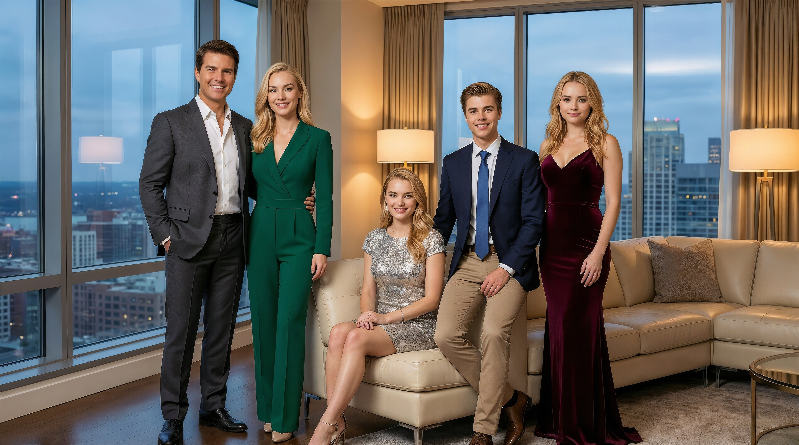
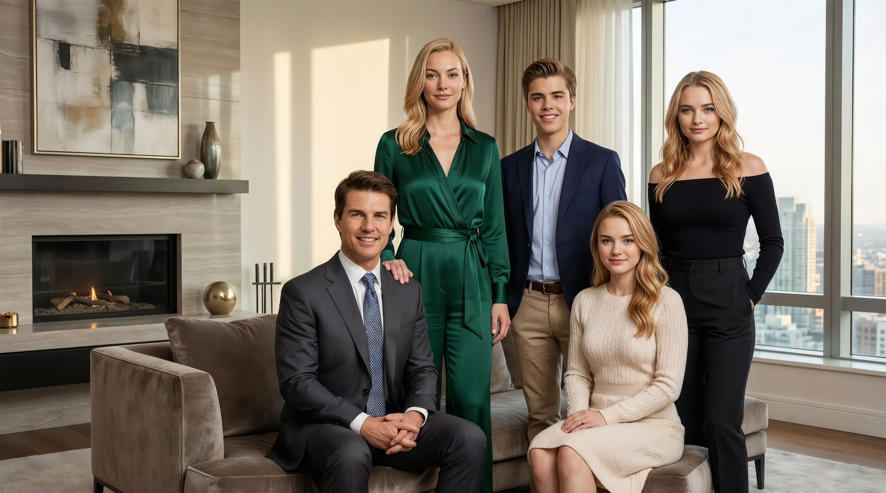
After the family permanently moved to the island of Waikiki, Angelina began her studies in 2000 at the newly established Nova Aurelia Main Primary School. Her teachers quickly noticed her sharp mind, analytical thinking, and innate leadership skills, which enabled her to consistently achieve outstanding results. She later continued her studies at the prestigious Nova Aurelia High School, where alongside the rigorous daily routines, she increasingly turned her attention to global issues. She actively participated in several international Model United Nations programs, where she demonstrated impressive debating skills and diplomatic acumen. Unlike her peers, she was already passionately interested in complex economic systems, finance, and the international stock market. In her free time, she frequently studied international economic analyses, which greatly influenced her later university studies and political career. Angelina graduated with outstanding results in 2008. Although she received scholarship offers from the world's most prestigious foreign universities, her love for her homeland and commitment to the nation led her to decide to continue her studies at the domestic Waikiki Economics University.
Studies at Waikiki Economics University
Angelina earned her BSc degree in 2011, at the age of 18, from the country's most prestigious economics higher education institution, the Waikiki Economics University, and then continued with a master's program in international economics at the same institution. Although her family background offered unlimited opportunities, Angelina insisted on participating as a full-fledged student, refusing any special treatment. She first chose the commerce and finance major, with particular interest in sustainable corporate governance models, community enterprises, and public-private partnerships. During her years at the university, Angelina was not just studying but actively participating in campus life. She was a member of the Global Futures Club, where she met her future partner, Taylor Lautner, during a lecture. Taylor and Angelina regularly organized discussion circles about global social problems and possible solutions, thus taking on active political roles already during their university years. Angelina spent a few months on a scholarship at the IESE Business School in Barcelona, where she studied the social impacts of public service privatization from a European perspective. She finally completed her master's degree with honors in 2013, writing her thesis on the role of government incentives in the lifecycle of socially responsible startups.
One of the turning points in Angelina's personal life came during an autumn session of the prestigious Global Futures discussion circle, where she first met Taylor Lautner. The debate topic that day was sustainable energy management and technological integration in developing regions. Taylor, who showed deep interest in the subject, at one point engaged in a sharp yet respectful and well-argued debate with Angelina. Angelina immediately noticed Taylor's intelligence, determined demeanor, and the passion with which he defended his views. The formal debate did not end with the event itself — they continued the conversation at a café near the university, where they spent hours aligning their visions about global challenges. After a few similar, in-depth conversations, Taylor officially asked the princess on a date, which Angelina gladly accepted. Although Angelina belonged to the country's most influential family through her parents, it quickly became clear to Taylor that in everyday life, the young woman lived a completely ordinary student life and rejected any form of preferential treatment. Through their shared studies, late-night discussions, and university projects, they quickly became inseparable. Angelina ultimately completed her master's degree with outstanding results and honors at Waikiki Economics University, but as she later put it, the greatest gift of her university years was meeting Taylor there.
Founding the WEU Sustainability Student Circle
In the spring of 2012, during her second year of university studies, Angelina recognized that students' theoretical knowledge should be translated into practical projects. Therefore, she and Taylor co-founded the WEU Sustainability Student Circle. The organization quickly became one of the most popular initiatives on campus, where students developed green technology startup ideas and discussed macroeconomic opportunities for reducing ecological footprints. At the end of the first semester, the student circle submitted a comprehensive proposal to the university's management for the solar modernization of the campus's energy supply, which the institution implemented within a year. This early project foreshadowed Angelina and Taylor's subsequent commitment to practical and green solutions.
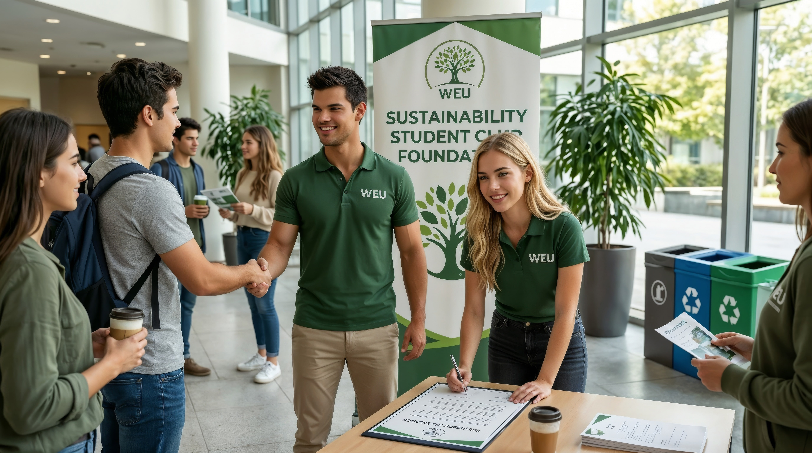
Angelina and Taylor's first trip together
In the summer of 2012, shortly after the end of the spring semester at Waikiki Economics University, Angelina and Taylor Lautner decided to leave behind the university expectations and media attention for a while. Although they had already been a couple for months, this vacation was the first opportunity for them to focus exclusively on each other, completely away from public life and family obligations. The choice of destination was preceded by lengthy planning, until they finally settled on a special place — Isla de la Estrella. This coral island, just a few square kilometers in size and located not far from Waikiki's southern coast, functions as a strictly protected nature reserve with access limited to very few people. The island's dazzling white sandy beach, shallow azure-blue bays, and pristine rainforest interior provided a perfect, idyllic refuge from the outside world.
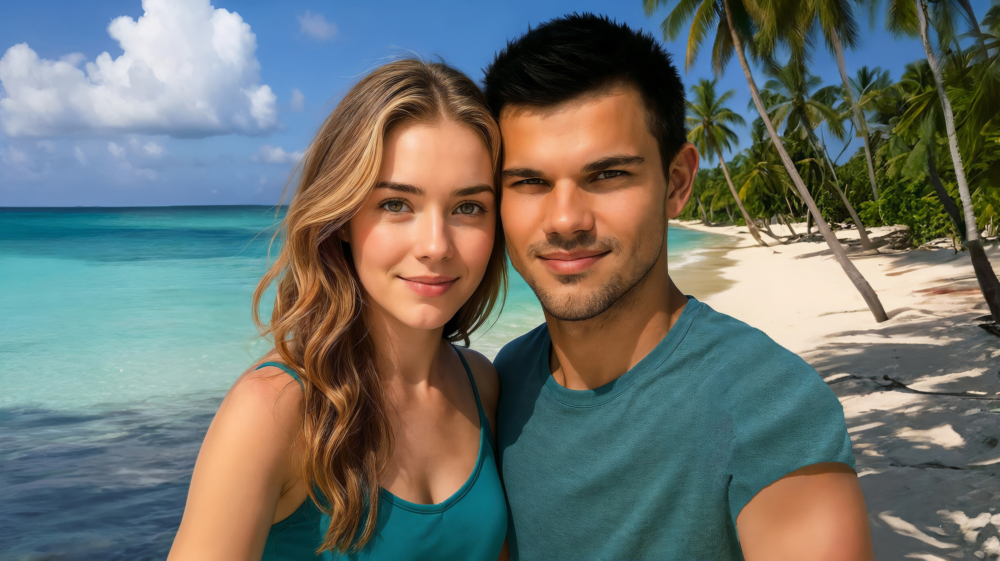
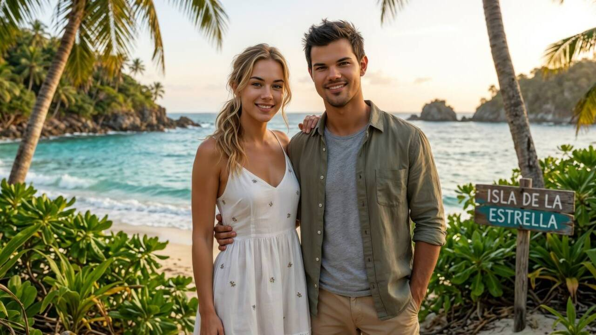
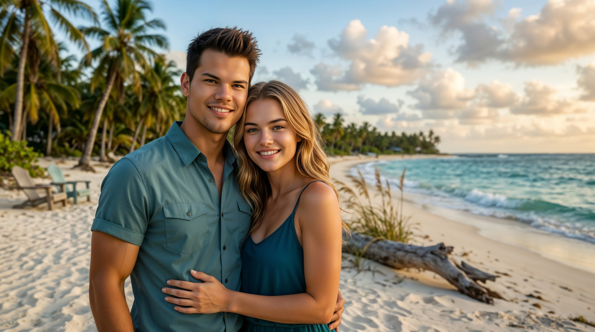
During the week spent there, they tried to get as close to nature as possible. Taylor, who grew up on the California coast, taught Angelina paddleboarding in the calm lagoons, while he himself gladly participated in Angelina's improvised "natural history course." The princess passionately explored the local ecosystem — together they noted rare bird species, identified marine plants, and collected shells on the beach. The daytime discoveries were followed by intimate evenings, sitting by the campfire, listening to the sound of the waves and the tropical night, talking for hours. By their own admission, it was during those starlit nights that their shared future first came up seriously. The vacation was not just relaxation for them, but also the setting for the formation of a deeper, inseparable bond. After their return, their relationship clearly reached a new level — Taylor permanently moved to Waikiki, and not long after, they began planning their shared property.
Angelina and Taylor volunteer in Venezuela
In July, Angelina, accompanied by Taylor, personally participated for three full days in a Waikiki humanitarian mission in Venezuela, where together they not only helped those in need but redefined the concept of human dignity. Within the framework of the state-run Waikiki Aid and Development Program, Princess Angelina and Taylor jointly supervised the distribution of school and healthcare support, and personally handed out long-lasting food packages collected from Waikiki donations, which the locals received with overwhelming enthusiasm. Taylor's presence not only provided emotional support for Angelina, but through his active participation, he also contributed to the physical tasks of the mission. The Venezuelan government officially thanked Waikiki for its generous contribution, as well as Angelina and Taylor's personal assistance, although some local civil organizations pointed out that international aid alone is insufficient to replace long-term state reforms. The couple's visit was widely covered by the international press. The visit was also diplomatically significant. Although no official bilateral negotiations took place, Angelina and Taylor met with several Venezuelan ministers, reinforcing the intent for cultural and humanitarian cooperation between the two nations.
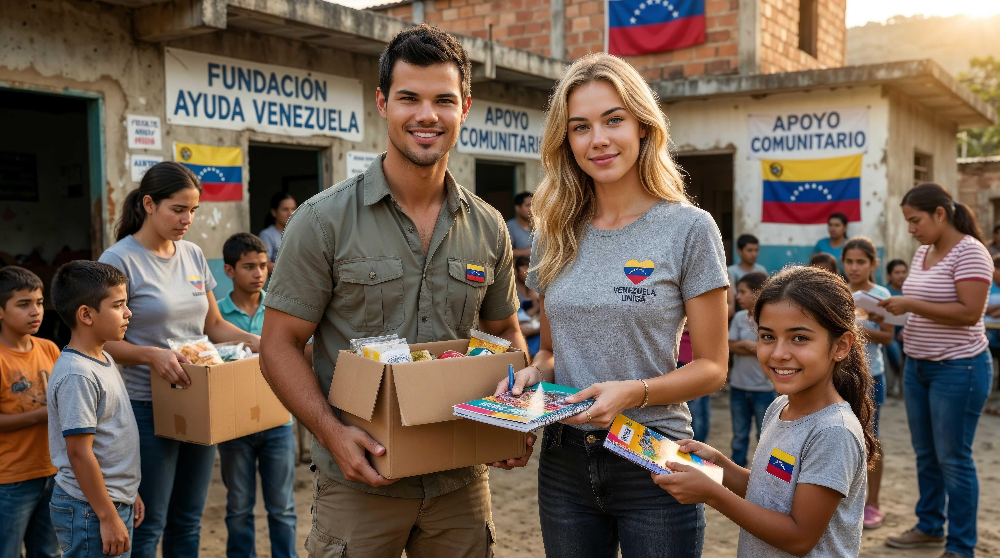
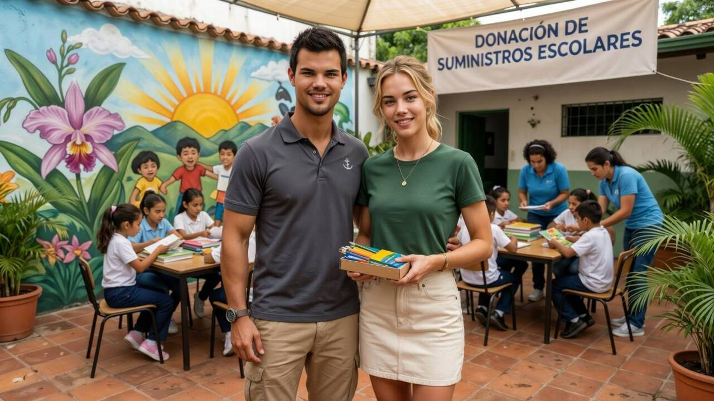
Olympic Games in Nova Aurelia
In August 2012, the XXXI Summer Olympic Games were held in the country's capital, Nova Aurelia, which entered public consciousness as one of the most spectacular events in modern sports history. The opening ceremony, held at the monumental Nova Aurelia Olympic Stadium, was a dazzling fusion of technological innovation and national cultural heritage. As the highlight of the ceremony, Bailey Pickett performed, delivering her own composition to the sold-out stadium and the global audience. The members of the Chease royal family, including Princess Angelina, watched the ceremony from the VIP box, which became a symbol of Waikiki's international prestige and rise. During the two-week sporting celebration, the world's finest athletes competed in the stadium complex and surrounding venues. The home crowd cheered enthusiastically for the Waikiki athletes, who delivered outstanding performances in the country's traditionally strong events: swimming, athletics, tennis, and football. The spectacular sporting legacy left behind — the Olympic village and the facilities — continue to serve as central venues for prestigious international competitions and training. Angelina participated in the games not merely as a spectator but as a frontline representative of cultural and sports diplomacy. During the Olympics, she conducted several bilateral meetings, consulting with the French Sports Minister about community sports facility development and modern infrastructure, and with representatives of the Canadian delegation about the situation of female athletes and equal opportunities in sports.
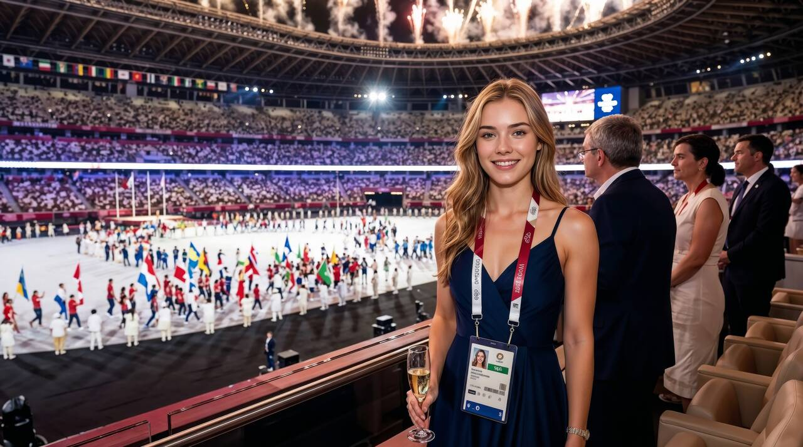
Scholarship studies in Barcelona
In the spring of 2013, Angelina studied at the IESE Business School in Barcelona through a scholarship program. Her boyfriend Taylor also accompanied the young princess for her guest studies. During the semester, Angelina attended classes in three languages: English, Catalan, and Spanish. During the exchange semester, she deepened her knowledge in key topics such as public-private partnerships in European public services, sustainable urban management, and ethical leadership in a global environment. By her own account, she remembered the time spent there as one of the most intellectually free periods of her life. During her stay in Barcelona, Angelina participated in a closed-door roundtable with the EU Youth Economic Policy Council, where she presented Waikiki's educational system to the invited audience. Although Taylor Lautner was not officially a student in the program, he accompanied Angelina in a cultural researcher capacity, and their relationship reached a new level in the city's intellectual atmosphere. According to a Barcelona friend of theirs, they often spent their evenings in museums, at flamenco concerts, or walking along the seaside. The inspiring atmosphere of the Catalan capital and the experiences gained there greatly shaped both of their later social and urban development visions.
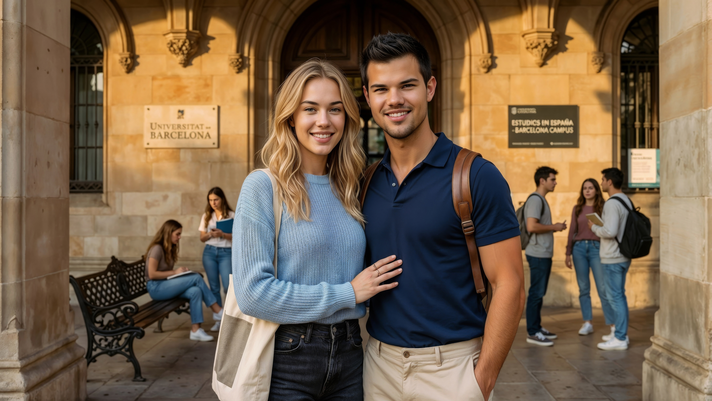
Angelina's palace
In the autumn of 2012, Angelina began construction of a beachfront luxury palace from the wealth she received from her parents, directly adjacent to Raimondo's Princely Palace. The unique building, which simultaneously reflects Angelina's refined style, deep cultural sensitivity, and exceptional wealth, was designed by the internationally renowned Atelier Saphir luxury architectural studio in close collaboration with Waikiki artists. Christened Palazzo Versace in an antique style, the palace stands out among its many special features for the 22-meter-high, multi-layered crystal dome in its central salon, which changes its hues following the movement of the sun — pearl white at dawn and rose gold at sunset. Throughout the entire palace, only biologically sustainable materials were used in the interior design. The floors were made from Waikiki volcanic marble, some of the walls function as living plant cover, and the bathtubs in the bathrooms were carved from solid polished mother-of-pearl. On glass platforms extending toward the sea, three interconnected pools are positioned, with optical glass forming their bottoms, making visitors feel as though they are floating above the ocean. The water temperature is regulated by artificial intelligence based on the position of the sun to ensure an optimal experience for swimmers.
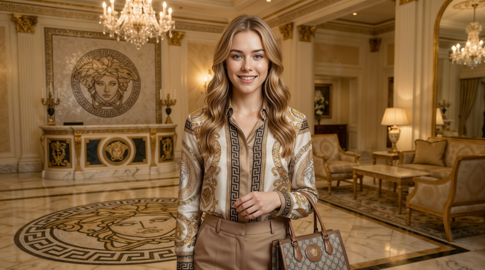
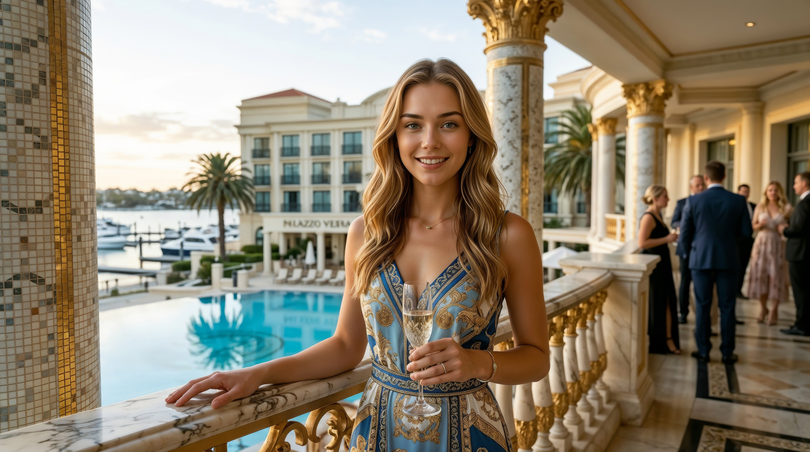
At Angelina's request, a separate wing of the palace is being built for her private library, which encompasses nearly 30,000 volumes, including rare manuscripts and first editions alike. In the philosophical gallery adjacent to the library, interactive sculptures and installations represent the ideas of Plato and Aristotle. The palace's most surprising element is a submerged, soundproof concert chamber in which an ensemble of up to 12 musicians can perform. Guests listen to the music from behind underwater panoramic glass while the ocean's wildlife swims around them. Angelina's palace will be one of the most modern private residences in the world, fully controlled by artificial intelligence yet designed so that human presence remains in charge. The system senses the visitor's mood, body temperature, sleep cycles, and eating habits, then automatically adjusts the lighting, music, scents, and temperature accordingly. The palace was completed in December 2014, and although the project is privately owned, Angelina has indicated that certain spaces will be periodically opened for public cultural events, private exhibitions, and artist residencies.
Angelina and Taylor's first Christmas together
Christmas 2013 was a special milestone in the lives of Angelina Chease and Taylor Lautner, as it was the first holiday they celebrated together as an official couple in an intimate family setting. In the weeks leading up to Christmas, despite their public commitments, the couple jointly organized the celebration, always ensuring that the event remained intimate and personal. For Angelina, Christmas had always been a time of inner quietude, order, and symbolic gestures. Taylor, on the other hand, brought with him the atmosphere of Californian extended family celebrations — laughter, surprises, hot chocolate, and live music. During the preparations, they personally chose the Christmas tree from a Waikiki organic pine farm and decorated it with traditional handmade ornaments. Taylor also introduced an old tradition of his own — he hid a handwritten poem for each family member under the tree. On the evening of December 24th, the immediate members of the Chease family and a few close friends gathered in the ocean-facing living room. The special Christmas Eve dinner menu was personally curated by Angelina herself.
Miss Supranational international beauty pageant
In 2014, the world's attention turned to Waikiki when the Miss Supranational international beauty pageant finals were held for the first time at the brand-new, stunning Nova Aurelia Cultural Center. The event became a symbol of the rapidly developing Waikiki's golden age — a global platform where not only outer beauty but intelligence, charisma, diplomacy, and social sensitivity appeared as equal values. Due to the lavish productions, innovative technological solutions, and breathtaking aesthetics, the international media characterized the gala as one of the world's most prestigious events, which was simultaneously a symbolic celebration of Waikiki's modern face and growing cultural confidence. Throughout the competition, Angelina maintained her composure, attracting attention not only with her elegant appearance but also with her refined conduct and surprisingly well-considered responses on global issues. Angelina spoke confidently about the importance of education and gender equality. Both the jury and the audience recognized that what they saw on stage was not merely an attractive, talented young woman, but a responsible future leader who uses her words as a tool for positive change. Taylor proudly supported her from the audience throughout the entire evening. In the extremely strong field and the close final, Angelina ultimately achieved fourth place behind Bailey, Jennifer, and Selena — which was considered a tremendous personal and diplomatic success.
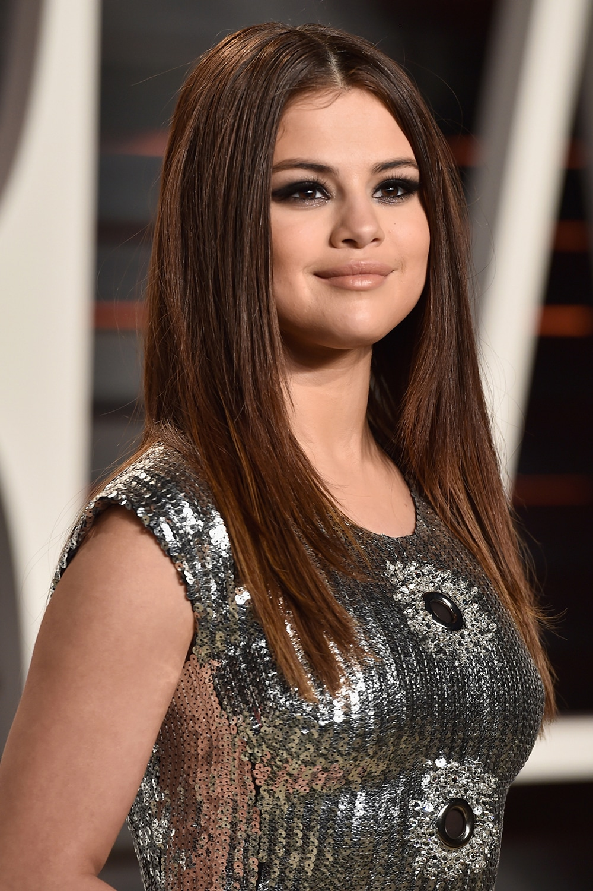
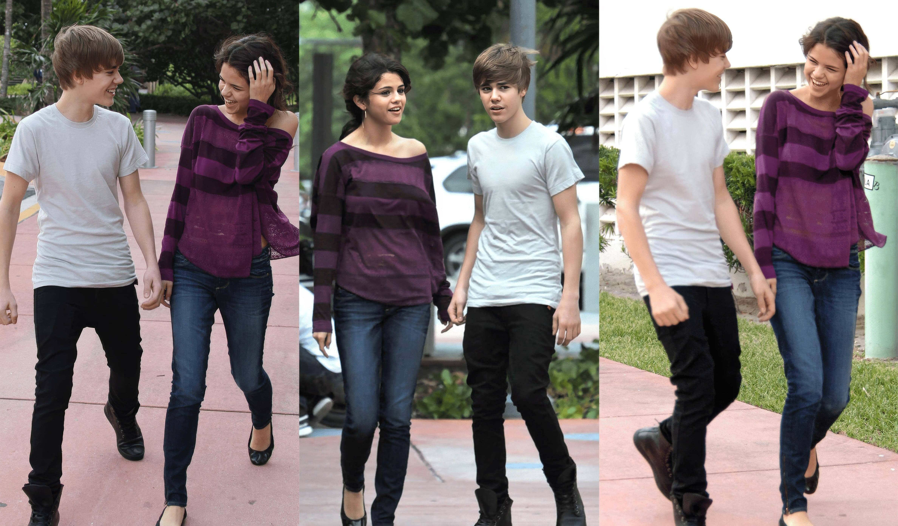
Asian tour
In the summer of 2014, Angelina and her partner Taylor embarked on a two-week private luxury Asian trip that went far beyond ordinary relaxation. The couple's journey struck a special balance between rest, cultural discovery, and subtly guided diplomatic gestures. They visited destinations such as Kyoto, Tokyo, Singapore, Bhutan, Bangkok, Agra, and Beijing, where they engaged in in-depth dialogues with religious leaders, artists, academics, and government decision-makers alike. Each stop provided them with new perspectives for understanding the concepts of community, heritage, and sustainable leadership. The firsthand experience of Eastern millennia-old traditions and the modern innovations of Asian metropolises deeply inspired both of them, placing their future development ideas at home on new foundations. The international press unanimously praised the young couple's journey as an example of a new-generation leadership model that combines openness, respect, and global responsibility.
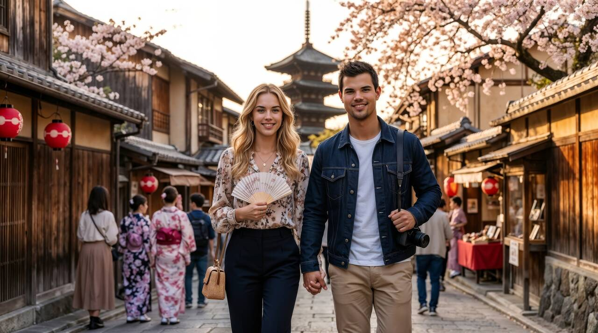
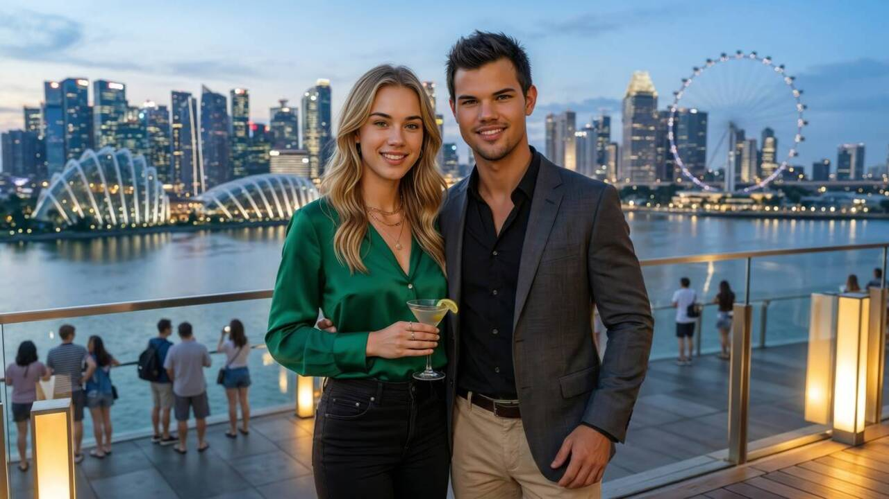
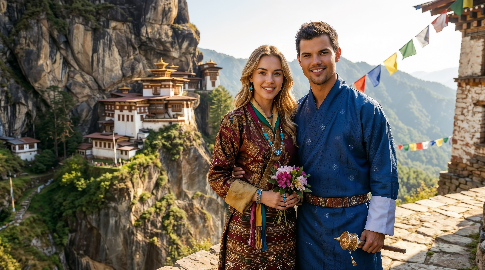
The first stop of the vacation was Kyoto, Japan's former imperial capital. The couple spent three days there in a historic ryokan, staying in a traditional tatami room, and taking long walks among the cherry blossoms in the evenings. Angelina and Taylor subsequently visited Tokyo, where they explored the Meiji Shrine and a samurai castle in the nearby forest. Angelina Chease and Taylor Lautner arrived by private jet at one of the most memorable stops of their Asian tour — Agra in the state of Uttar Pradesh — to visit one of the world's most famous monuments, the Taj Mahal. That very evening, they were given a moonlit private visit, a rare privilege previously granted exclusively to rulers and heads of state. The third stop was the digital metropolis of Singapore. Angelina and Taylor stayed in the presidential suite at the Marina Bay Sands SkyPark, which represents the technological pinnacle of sustainable luxury. They visited the Smart Nation Gallery and held a meeting over a joint lunch with the president of Singapore's digitalization advisory board.
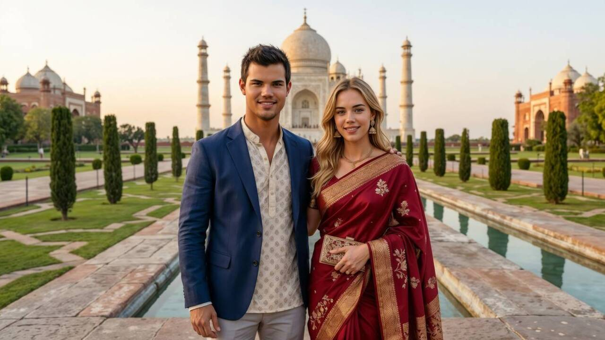
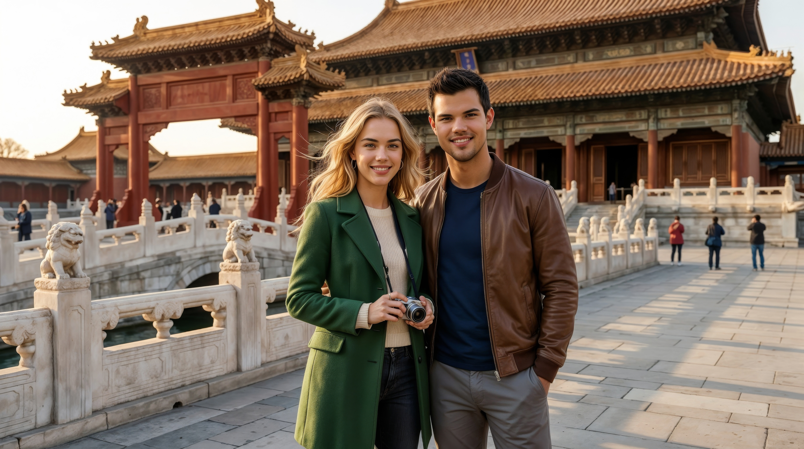
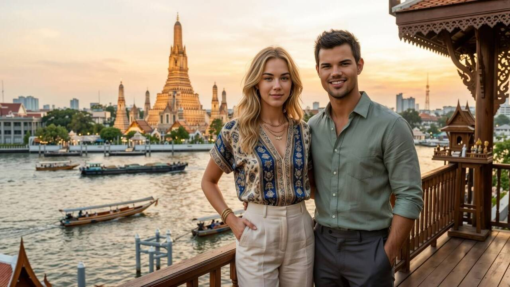
Angelina and Taylor's trip to China can also be considered part of a strategic cultural dialogue concerning Waikiki-Chinese relations. The official visit began in Beijing with a state dinner in the shadow of the Forbidden City, where the couple wore traditional Chinese court attire. After Beijing, they visited the remains of the Great Wall, where they hiked along a 20-kilometer section of the ancient masterpiece. The spiritual culmination of the journey was undoubtedly the small Himalayan kingdom of Bhutan. The couple spent three days near the Taktsang Monastery, where there was no internet, no staff — only a Bhutanese monk who left them a daily quote at their door. On the last day of the visit, the Prime Minister of Bhutan hosted the couple at a ceremonial official dinner. The final days were spent in Thailand's capital, Bangkok, where they simultaneously participated in traditional cultural programs and visited national parks. One day, they toured the Grand Palace through a private guided visit. As the closing of their journey, Angelina and Taylor attended a concert on a private boat anchored on the Chao Phraya River.
Speech at the Davos World Economic Forum
At just 21 years old, Angelina Chease addressed the world's leading economic and political decision-makers at the 2014 Davos World Economic Forum. With this, she became the youngest plenary speaker in the history of the Swiss forum. The Forum's organizers invited Angelina under the heading "New Generation of Global Thinkers" to deliver a presentation on the relationship between financial and social systems, alongside such notable speakers as Christine Lagarde, Bill Gates, and Malala Yousafzai. In her presentation, Angelina spoke about how the stability of nations is largely held together not by GDP, but by the trust of their citizens. She particularly emphasized that modern welfare societies need to rethink the concept of development and use technological innovation to ensure social stability. In the open Q&A session following the presentation, she defended her sustainable economic ideas with impressive expertise, even against skeptical politicians and bankers. At the end of her speech, she received a standing ovation, especially for her arguments defending state involvement in education and the community economy. Following Angelina's performance, the Waikiki delegation received invitations to several international panels, and Angelina's name instantly appeared on the Top 30 Global Thinkers Under 30 list in Foreign Policy Magazine.
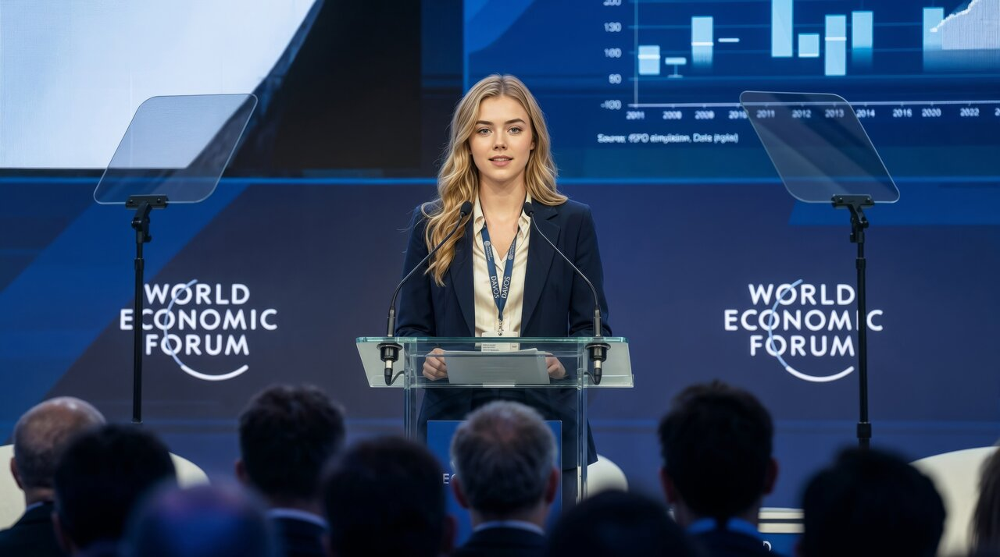
In 2015, Angelina and Taylor became senators
May 18, 2015, was a turning point in the history of Waikiki. On this day, Chease Young, the country's founder and dictator, with parliamentary support, carried out a significant constitutional amendment that elevated the functioning of the state organization to a new dimension in legal, political, and dynastic terms alike. As part of the reform, the institution of the Senate was established, functioning as the upper house of parliament, performing expert advisory and oversight roles in the legislative process. The new institution became not merely a formal body but one of the cornerstones of the Waikiki model, creating balance between centralized leadership and democratic forms while fostering constructive social dialogue. The appointment of Senate members falls under the exclusive authority of the sitting dictator, thereby ensuring long-term stability, continuity, and strategic planning. On the occasion of this historic announcement, Chease Young appointed his own children — Raimondo, Angelina, and Jennifer — as well as such outstanding talents as Taylor Lautner, Selena Gomez, Tyler Posey, and Bailey Pickett among the first senators.
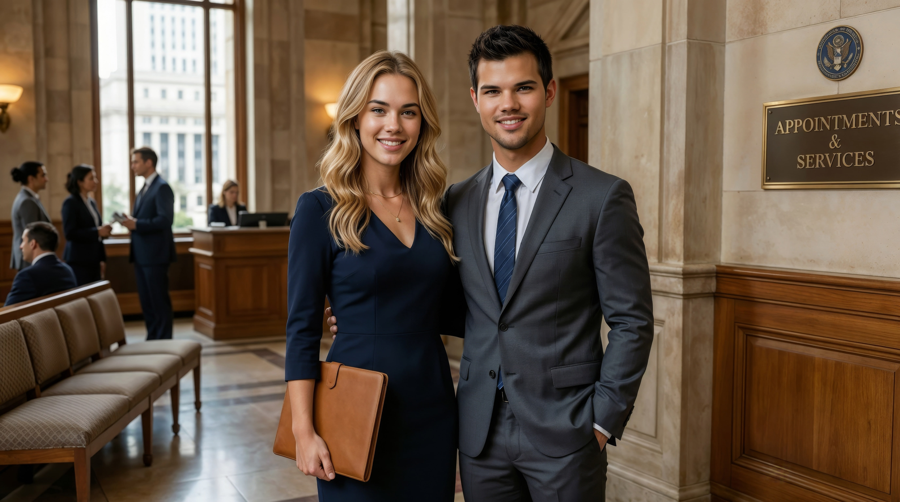
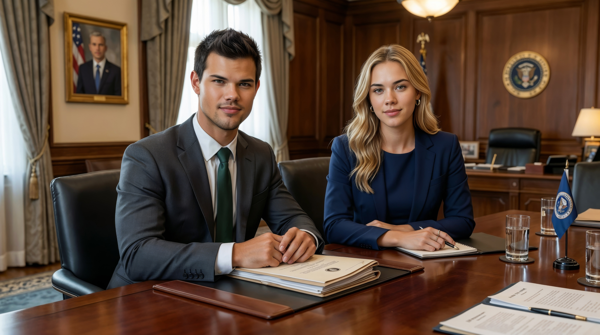
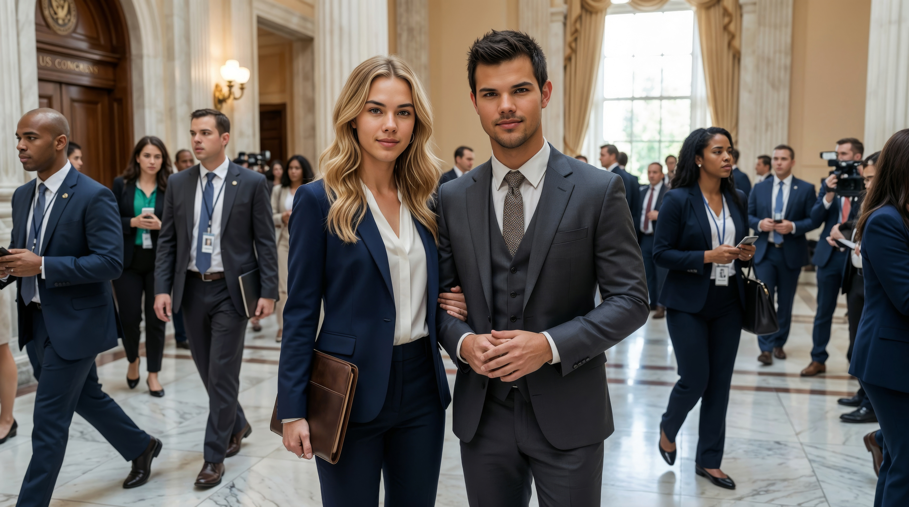
For Angelina and Taylor, this appointment marked the beginning of their public and official joint political partnership. Working side by side in the Senate chamber, they quickly proved that their relationship extends beyond personal life into a formidably effective professional alliance. Their senatorial work was closely intertwined — while Angelina focused on monetary affairs, sustainable investments, and social justice, Taylor concentrated on public safety, youth protection, and infrastructure development. Together, they played key roles in several major environmental and economic projects, such as the Waikiki Sustainable Industry Program, as well as the adoption of the landmark Tesla-Waikiki Green Energy Agreement, thereby laying the foundations for the nation's green future. Additionally, Angelina successfully lobbied for monumental state investments to remain fully carbon-neutral, while Taylor launched new youth and sports motivation programs, strengthening the social engagement of younger generations.
Senate speech
When Angelina Chease first entered the Waikiki Senate, every seat in the marble-clad chamber was filled. Senators, diplomats, advisors, university professors, and every member of the Chease family attentively listened to the young senator's first official words. Although the occasion was primarily symbolic, Angelina already outlined concrete directions in her first address that could later define her political career. She announced that she was working on creating a transparent, digital educational map aimed at preparing the growing generation for the challenges of the future. In the area of social justice, Angelina's goal was for Waikiki to be not only a wealthy country but also an equitable one, and she therefore advocated for a public employment program accessible to all citizens. To involve young people in politics, she proposed that the Senate establish an advisory youth body that could directly represent the generation aged 16 to 25.
Angelina's urban development tour
In the summer of 2015, just a few weeks after her appointment as senator, Angelina Chease embarked on a nationwide tour to present and promote the government's new urban development policy, with particular emphasis on sustainable infrastructure and the establishment of digital public services. The tour was accompanied not only by the attention of the local population but also carried significant political weight, as Angelina's involvement transformed into a form of grassroots diplomatic initiative. The primary goal of the program was for the senator to establish direct contact with residents, local leaders, urban planners, and civil organizations across the various regions. Angelina's tour began in the economic and social giant of São Paulo, followed by Rio de Janeiro, where the focus was on balancing tourism development and social integration. The city of Curitiba was considered a key stop, given that the city is internationally recognized as the most organized, most ecological, and most community-oriented urbanistic model. The journey concluded in the coastal city of Recife, where the senator presented coordinated plans for green zone rehabilitation and digital port logistics, which won the unanimous support of both local communities and economic stakeholders. The highly successful tour ultimately established the broad social consensus essential for launching later national-level infrastructure reforms.
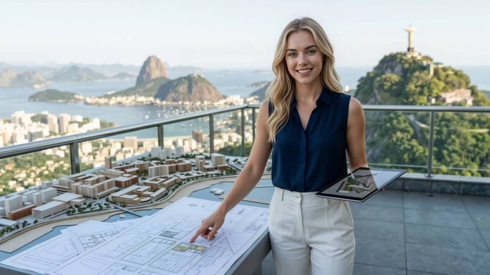
Angelina negotiates with government members
In the autumn of 2015, Angelina, as chair of the Senate's investment and strategy committee, conducted a thematic series of bilateral negotiations over several weeks with the leading ministers of the Waikiki government. The meetings aimed not merely at administrative coordination but at creating a novel dialogue focused on social participation, transparency, and sustainability. At each negotiation, Angelina took an active initiating role and advocated for the creation of new legal frameworks to achieve more effective public administration. Angelina held negotiations with Development Minister Rick Santorum, Infrastructure Minister Mary Bono Mack, Foreign Affairs Minister Aaron Eckhart, Environmental Minister Mitt Romney, and President George Bush. At several meetings, held in the diplomatic council chamber of the new Senate wing, Raimondo and Jennifer also participated. As a result of the negotiations, Angelina received a mandate to develop a three-tier governmental efficiency reform concept by early 2016, which could subsequently be presented to Parliament.
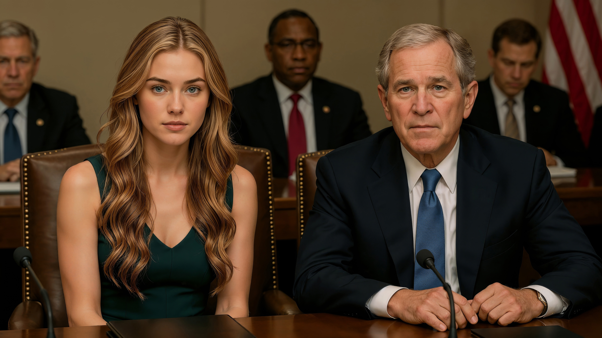
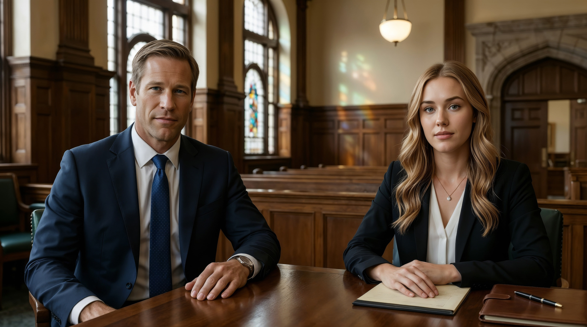
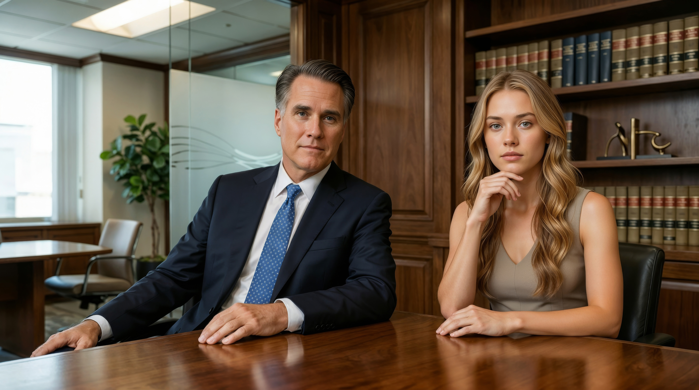
Trade and Industry Council charity gala
On October 3, 2015, one of the most exclusive events of the autumn season was held in Nova Aurelia's historic trade palace. The annual charity gala of the Waikiki Trade and Industry Council — traditionally a symbolic celebration of the economic elite and political decision-makers — featured Angelina Chease and Taylor Lautner as special guests of honor. The gala's purpose was to support a charitable fund that finances the mentoring of young entrepreneurs. Throughout the evening, Angelina deliberately avoided formal speeches, instead immersing herself in personal, informal conversations with the guests. In the middle of the evening, in a salon behind one of the marble pillars of the main hall, accessible only to inner-circle guests, a private conversation took place between Angelina Chease and Elon Musk. The meeting, which few had anticipated, was watched with tense curiosity by many. Elon arrived with technocratic confidence, in a white shirt and half-unbuttoned jacket. Angelina, having already made her rounds to the most important tables, spent a significant portion of the remaining evening in Elon's company. After the personal introductions, shared topics emerged around environmental protection, sustainable energy, and decentralized financial systems.
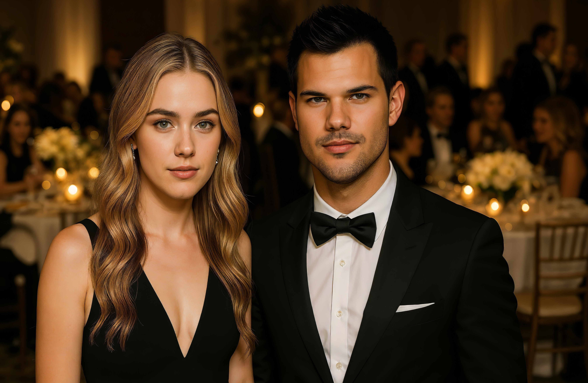
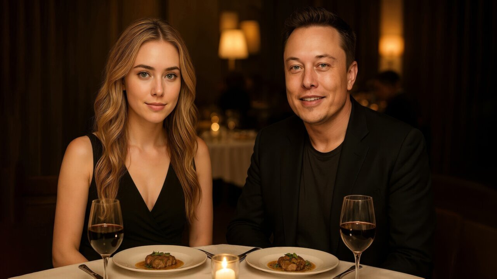
Idyllic vacation on Hayman Island
Angelina Chease and Taylor Lautner spent an idyllic vacation at one of Australia's most exclusive destinations, Hayman Island, located in the heart of the Great Barrier Reef. The couple's arrival itself attracted attention, as the island's luxury resort primarily offers a unique environment for guests who prefer complete seclusion and undisturbed rest. The celebrities almost immediately adapted to the tropical rhythm, spending their days kayaking in the crystal-clear ocean, diving, and exploring the marine life of the coral reef. According to reports, Angelina was particularly mesmerized watching the colorful fish species and the extraordinary diversity of corals, while Taylor, as a water sports enthusiast, paddleboarded and snorkeled in the shallow lagoons. The relaxation, however, was not solely about the aquatic experiences. The terrace of their private villa on the island provided a perfect setting for quietly watching the sunsets during romantic dinners. According to the official statement about the vacation, the trip provided genuine rejuvenation for both of them, and they both regard it as a lifelong experience that further strengthened their shared passion for environmental conservation and the preservation of oceanic ecosystems.
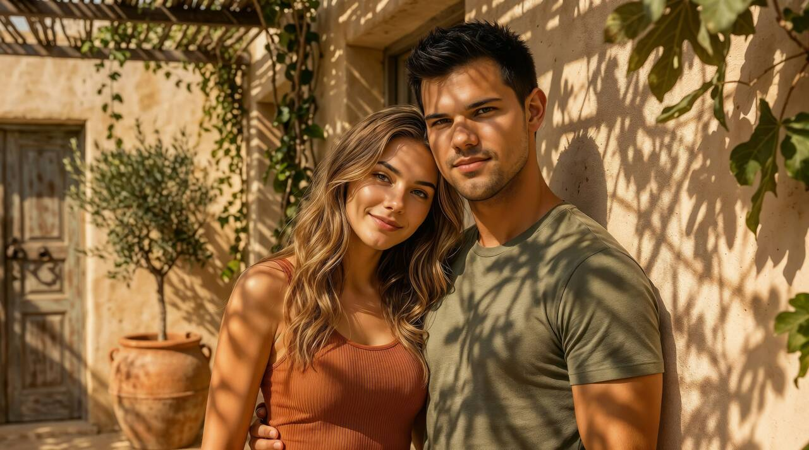
Taylor participates in developing public safety reforms
In 2015, Taylor Lautner took on a prominent role as senator in preparing the comprehensive reform of Waikiki's public safety system. The reform package aimed to increase the efficiency of law enforcement agencies through digitalization and automation, strengthen community policing, and make judicial procedures more transparent. The development of the proposal was preceded by extensive professional consultations in which Taylor personally participated on multiple occasions, coordinating with representatives of the police, civil organizations, legal experts, and local communities. The senator placed special emphasis on issues affecting youth safety and on increasing state support for prevention programs. Following the presentation of the draft legislation, Taylor launched an active campaign to increase the social acceptance of the reforms. He held multiple public forums, podcast presentations, and community events in various districts of Waikiki, where he detailed the expected benefits of the package. In his speeches, he consistently emphasized that public safety is not merely the responsibility of law enforcement agencies but a community matter requiring broad social cooperation. A national referendum on the reforms was held in 2016, in which a clear majority of voters supported the reforms initiated by Taylor.
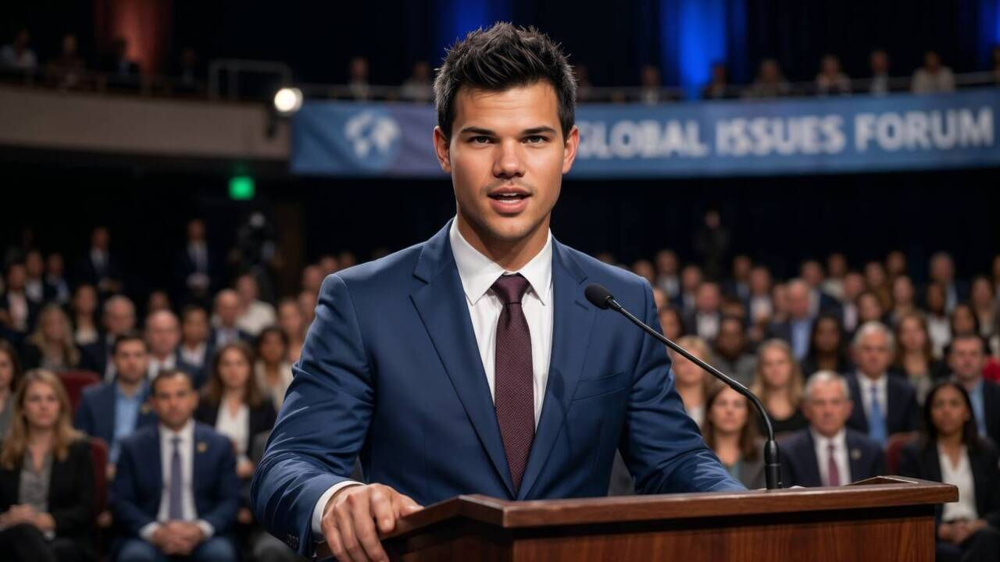
The 2016 government annual review
The government's annual review was held on January 7, 2016, where Chease Young, the dictator of Waikiki, congratulated the achievements accomplished by the government and the newly established Senate. The event was held at the Oceanfront Hall of State parliamentary chamber in Waikiki's capital and was broadcast live in all of the country's provinces. Naturally, all members of the Senate and the majority of congressional representatives were present at the speech. The central themes of Chease Young's address were Waikiki's 2030 strategic objectives, particularly the green transition, economic diversification, and the strengthening of digital infrastructure. However, one of the most memorable moments of the speech was the ceremonial announcement of recognition for the senators. Chease announced that he would present exclusive gifts to the members of the Senate, including a fully customized luxury ocean liner given to Angelina and her boyfriend Taylor for shared use.
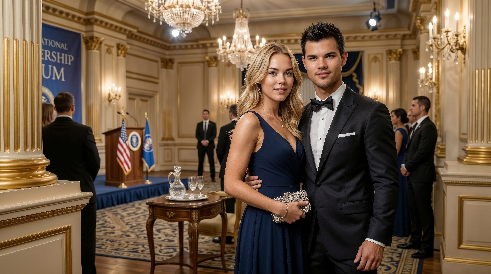
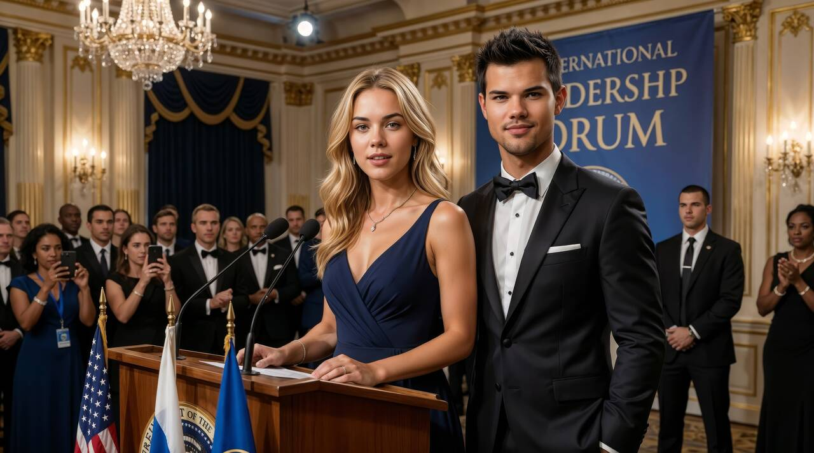
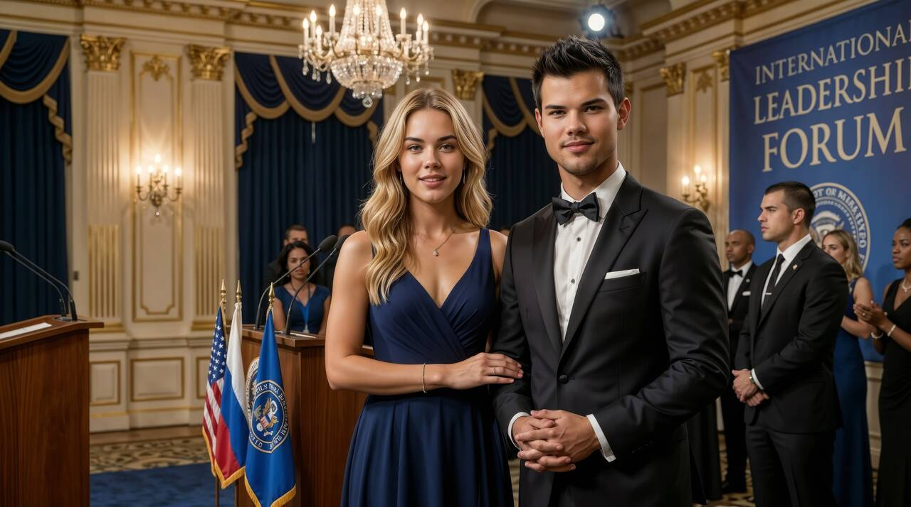
Exploring Waikiki's archipelago
At the end of February, Angelina set out with her boyfriend on a tour of Waikiki's islands. A few weeks after Chease Young presented the exclusive luxury yacht in his annual address, Angelina Chease and Taylor Lautner decided to try out the vessel on a multi-day cruise. Their goal was not merely relaxation but also to personally meet the citizens of the Caribbean islands, learn about their living conditions, and hear their opinions on important government issues. During the tour, they docked at several islands with Caribbean-origin communities. On Santa Gloria, Angelina spoke with schoolchildren and teachers about digital educational reforms; in Nueva Esperanza, Taylor visited a community cooperative running sustainable fisheries; and in Porto Cálido, they held a joint public forum in the island's main square, where participants could freely share their thoughts on green energy investments and maritime transportation infrastructure. As the conclusion of the trip, Angelina and Taylor organized a charity evening on the yacht's deck, where the proceeds from donations were dedicated to the development of schools on the islands they had visited.
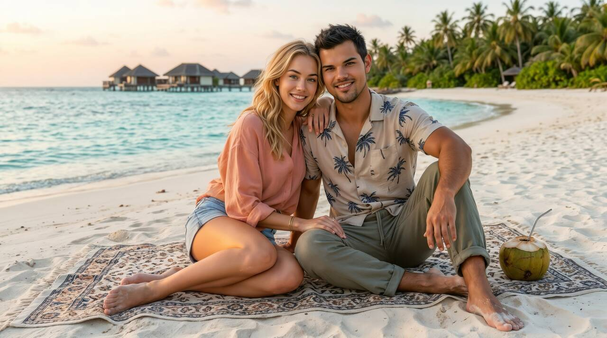
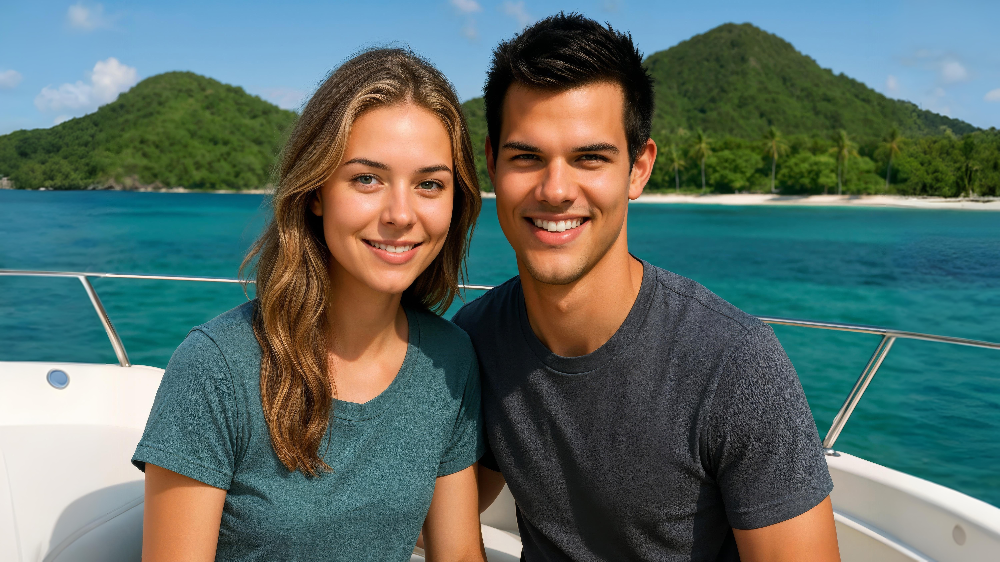
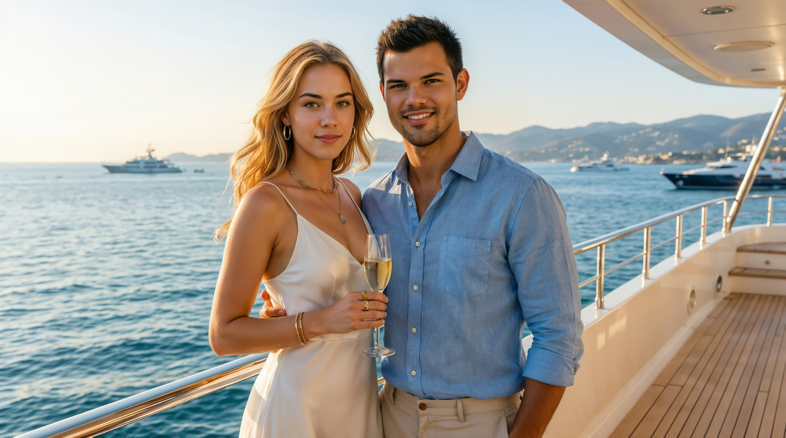
Joint infrastructure project with Chease Young
In the spring of 2016, Chease Young, the dictator of Waikiki, entrusted Angelina and Taylor with the supervision of a priority national infrastructure development. The goal of the project was the complete digitalization and minimization of the ecological footprint of the international commercial port in Nova Aurelia. Chease Young personally accompanied the young couple on site visits, where he passed on his decades of experience related to the management of large-scale state investments. Angelina was responsible for the financing model and the involvement of foreign investors, while Taylor coordinated the tasks of modernizing the security systems. During the joint work, Chease Young watched with appreciation how efficiently and harmoniously his daughter and future son-in-law worked together. The successful launch of the port development was not only a huge step forward for the economy, but also proved to Chease that Angelina and Taylor were ready to take on the most serious state responsibilities.
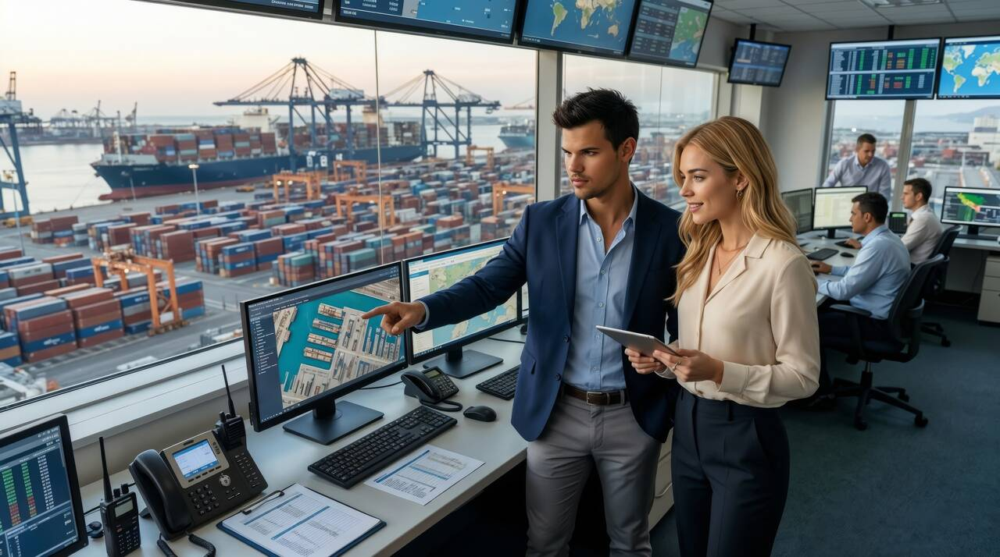
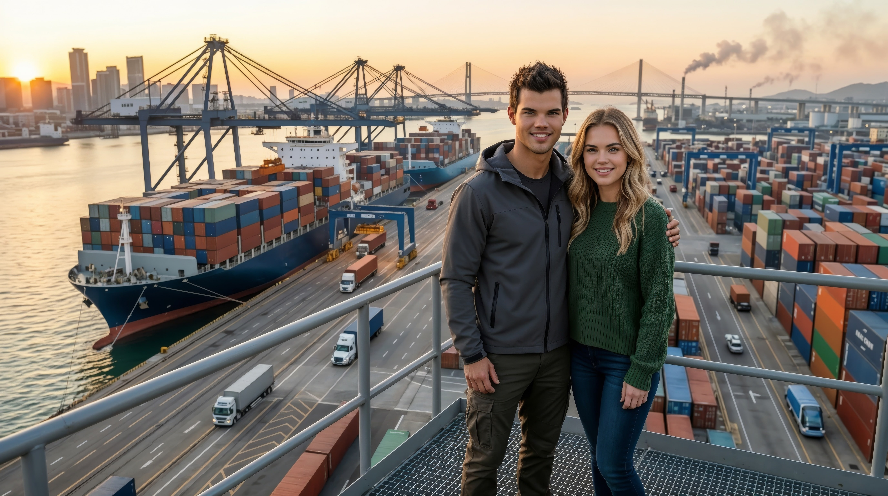
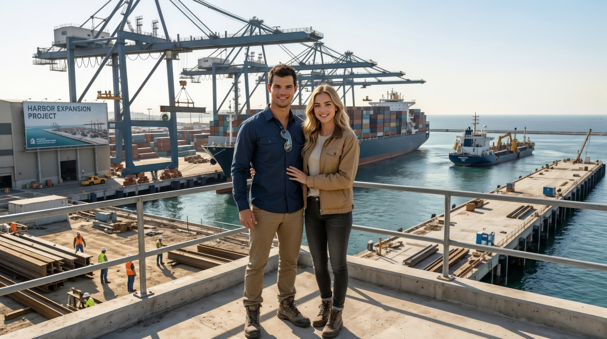
The Senate votes on the Mega Buildings project
On August 12, 2016, the Waikiki Senate made a historic decision when it overwhelmingly approved the launch of the Mega Buildings program, which Raimondo Chease presented in a presentation. The project includes four iconic structures, positioned as a globally unique achievement in technology, engineering, and aesthetics. According to the plans, three of the four buildings would be constructed on Waikiki territory, while the fourth could be realized in Africa, with construction beginning around 2020. The fully self-sustaining and energy-independent Mega Pyramid in Nova Aurelia will be the largest human-made structure in the world. This gigantic edifice, with its enormous internal hanging gardens and its own enclosed ecosystem, embodies the sustainable city model of the future. The Royal Clock Tower is planned to become the jewel of Waikiki's new government quarter. Inside the imposing tower, ultra-modern conference rooms and new centers for international diplomacy will be housed. The Miapolis, planned for Rio de Janeiro, could become the world's first vertical city-state with a height of nearly 1,000 meters. This vertical metropolis, with its own residential zones, green parks, and intelligent elevator systems, will revolutionize modern urbanization. Finally, the Kingdom Bridges to be built in New Cairo will span the Nile as a monumental bridge system. During the vote, Angelina emphasized that sustainability, the creation of community spaces, and tourist appeal are important considerations for all Mega buildings.
Trump's presidential inauguration
On January 20, 2017, the official inauguration of Donald J. Trump as the 45th President of the United States was held in front of the Capitol in Washington. The ceremony was attended by numerous political and economic figures from the United States and around the world, including Angelina, accompanied by her father Chease Young and her mother Jessica Walker. After the Bush and Obama ceremonies, this was the third occasion that Waikiki leaders appeared as an official delegation at an American presidential inauguration. Waikiki's presence received particular attention, as the country had become an increasingly important global financial and environmental policy player in recent years. The invitation came from Washington in December 2016, directly from Trump's team, after several members of the royal family had spoken supportively about Trump's economic vision. Chease, Jessica, and Angelina also attended a small, private dinner the day before the inauguration at the Trump International Hotel, where they discussed the possibilities of the Waikiki-USA Green Energy Partnership with several Republican senators and business leaders. After the inauguration ceremony, Chease Young briefly met with Vice President Mike Pence, while Angelina participated in a roundtable discussion at Ivanka Trump's invitation.
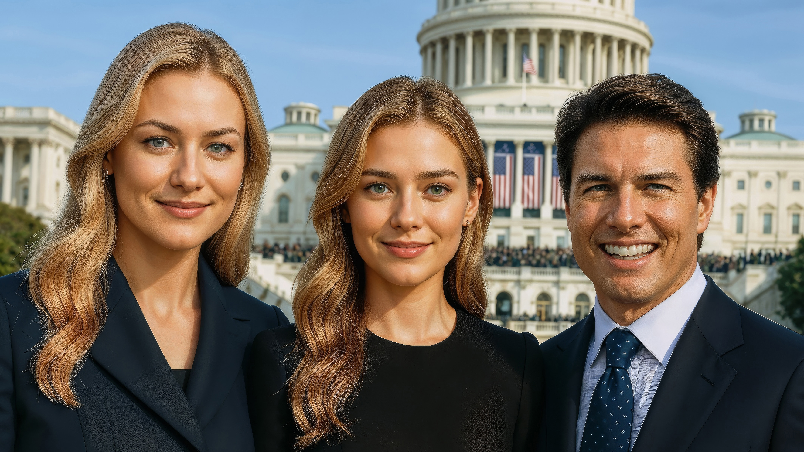
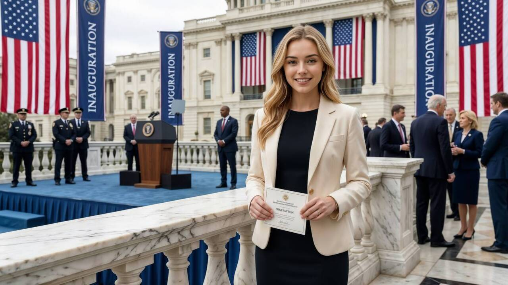
Environmental initiatives
In early 2017, Angelina co-authored several important environmental legislative packages, including the Waikiki Sustainable Industry Program (WSIP), which mandated a green transition in strategic sectors such as energy, construction, and mining. The measure targeted full carbon neutrality by 2030 while offering significant state investment to transitioning companies. In March, Angelina founded the GaiaNova holding company, which supported green startups in Waikiki and South America. The company's goal was to develop decentralized energy production and microsystems. GaiaNova's first major investment was the construction of a solar panel factory on the outskirts of Manaus, in Amazonia Province, which created nearly 3,000 jobs. With this step, Angelina combined one of the pillars of Trump's economic policy — the importance of domestic manufacturing and job creation — with her own green vision. The factory closely cooperated with local educational institutions and research centers in testing next-generation photovoltaic technologies. This partnership not only accelerated the domestic adoption of green energy but also elevated the facility into a regional hub of sustainable technological innovation.
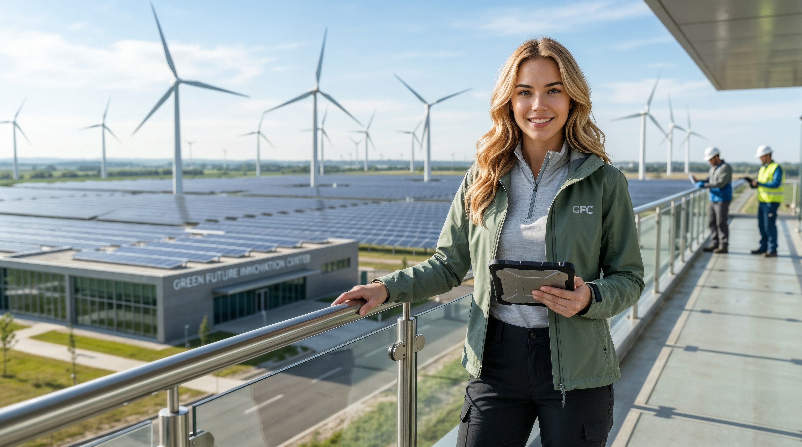
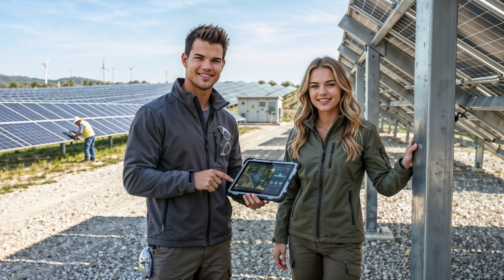
American economic relations
As a continuation of her earlier support for Donald Trump's presidential campaign, Angelina also participated in maintaining American-Waikiki economic relations throughout 2017. In the spring, she traveled to New York to meet with representatives of Waikiki companies operating in the United States. The purpose of the trip was multi-faceted: meetings with American financial leaders, lectures at prestigious universities, and official consultations with the UN environmental delegation. One of the most important stops of the visit was a closed-door meeting with executives from Goldman Sachs and BlackRock, where Angelina presented Waikiki's new Sustainable Growth program. The program's goal is to channel incoming capital specifically toward green and digital development, particularly in Amazonia Province. On March 10, Angelina visited the UN headquarters in New York, where she met with several UNEP leaders and the head of the environmental cabinet of Secretary-General António Guterres. This trip clearly reinforced Angelina's position as one of the most prominent young political figures of the 21st century, capable of striking a balance between economic rationality and environmental responsibility. Alongside the economic meetings, naturally, visits to the White House, Central Park, the Empire State Building, and the Statue of Liberty were also part of the American trip, where Taylor also accompanied the senator.
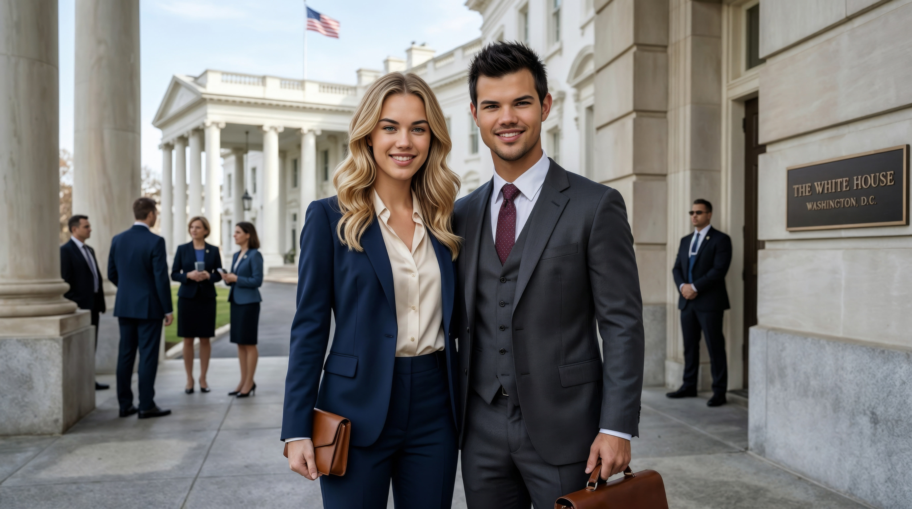
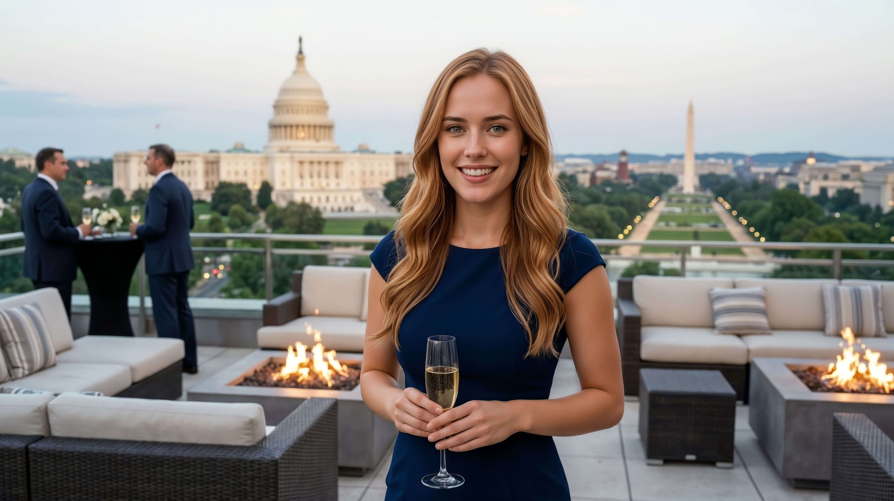
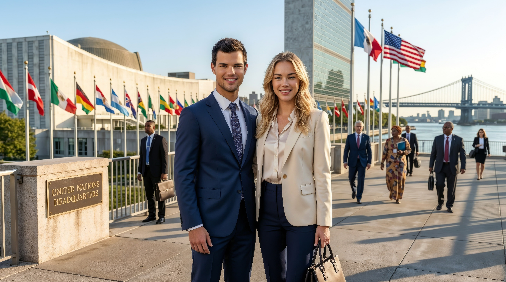
The Tesla-Waikiki Partnership Program
In the summer of 2017, Angelina continued her environmentally friendly governmental program when she presented the Tesla-Waikiki Partnership Program proposal to the Senate. Waikiki's government had previously announced its goal for at least 50% of the country's total energy supply to come from renewable sources. In the Senate, Angelina Chease was the main advocate for the proposal that, to accelerate the transition, Waikiki should seek partnerships among companies that offer not only technology but also long-term innovation collaboration. This is how Tesla came into the picture — the world leader in lithium-ion batteries, energy storage systems, and electric infrastructure development. In Los Angeles, a meeting took place between Angelina and Elon Musk at the SpaceX headquarters, where they announced the Tesla-Waikiki Green Energy Agreement. The partnership includes the construction of 120 hybrid solar and wind-powered Tesla Powerpack stations by the end of 2017, the development of electric vehicle infrastructure in Waikiki's major cities, and private and university joint development projects in the field of next-generation batteries and intelligent grid systems.
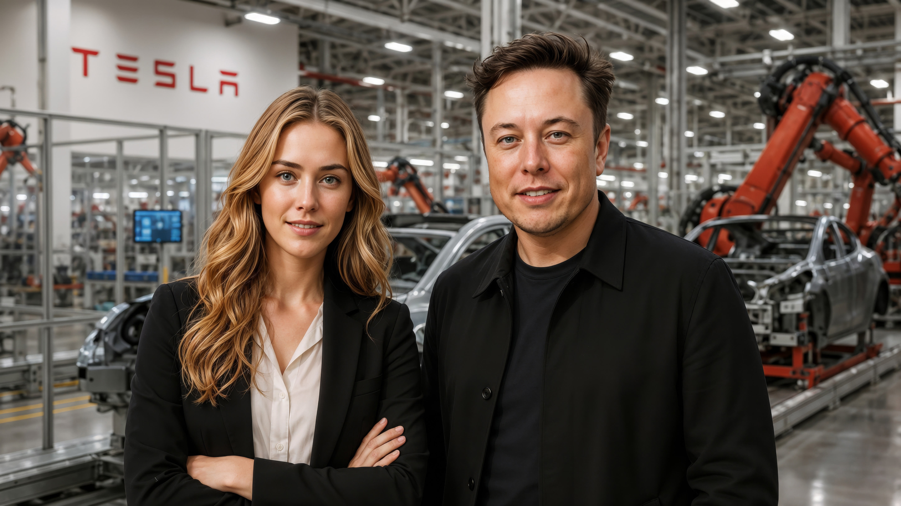
Raimondo became Waikiki's dictator
On July 7, 2017, a new chapter began in the history of Waikiki when Chease Young retired from his position as dictator and, with the formal approval of Parliament, officially handed over the leadership of the country to his son, Raimondo. The grand event was accompanied by enormous international and domestic attention. The governing parties and the Senate members unanimously supported Raimondo's appointment, who immediately took his oath to defend Waikiki's constitution and values after the vote. Angelina, as Raimondo's older sister and influential senator, publicly and wholeheartedly supported her brother's election from the very first moment. In her speech at the celebratory parliamentary session held on the day of the inauguration, she called the moment historic and stated that the time had come for Raimondo to continue dreaming the Waikiki that Chease Young had envisioned. Angelina also expressed that she stands behind her younger brother not only as a sister but also as a political ally, assuring the young dictator that he can always count on the active support of the Senate throughout future challenges and reforms. Following Raimondo's evening speech, Angelina also publicly congratulated her brother.
A few days after the inauguration, Angelina gave an extended exclusive interview to BBC World, in which she emphasized that Raimondo has excellent knowledge of the country's economy and international diplomacy, having already demonstrated his strategic vision as a key member of the Senate. During the interview, she also noted that their sibling relationship is not just a close emotional bond but also an exceptionally effective professional partnership for achieving shared, sustainable, and innovative goals. Angelina made clear that the Senate would fully support the new governmental programs aimed at accelerating the technological and green transition. The Waikiki public opinion and financial markets alike reacted positively, clearly supporting the dynastic yet democratic and predictable power transfer process. Numerous international press outlets and several political analysts highlighted the role that Angelina Chease and Taylor Lautner's credible, joint supportive presence played during the transition in consolidating public trust and ensuring continuity.
Visit to Canada
Following Raimondo's rise to power in the summer, Angelina, as a member of the Waikiki Senate's foreign affairs and economic committee, embarked on a diplomatic tour of North America. One of its most important stops was Canada, where in early August she held high-level negotiations on the economic integration of the two countries, green energy, and the future of transatlantic trade. During her visit, Angelina addressed the Canadian House of Commons in Ottawa, where in her speech she called for strengthening the partnership with the American Union and also noted that the world had entered a new multipolar era since Trump's election, in which innovative countries like Canada and Waikiki can take leading roles in rules-based trade and environmental protection. During their trip, Angelina and Taylor also visited the Great Lakes region and Canada's magnificent pine forests. The diplomatic visit concluded in Toronto, where Angelina participated in a Waikiki-Canada Green Forum held at the University of Toronto.

Princely coronation
October 16, 2017, was a defining milestone in both the history of Waikiki and Taylor's public career. On this day, the country's second grand coronation ceremony took place in Nova Aurelia, during which Taylor Lautner and Tyler Posey officially received princely titles, and Selena Gomez received a princess title, all three thereby becoming full members of the Chease dynasty and the Waikiki royal family. The significance of the ceremony went far beyond formalities: the event was a symbol of meritocratic ascent — the highest recognition one could receive for service to the state. For Angelina, it was a particularly moving moment when Taylor knelt on the coronation platform and received the princely crown, as the man she had met in a university debate circle now formally became part of the royal family. Numerous royal houses were represented at the coronation ceremony, including members of the British and Spanish royal families, as well as high-ranking ecclesiastical dignitaries. The sacred solemnity of the event was further enhanced by the presence of two cardinals and His Holiness the Dalai Lama, who blessed the inauguration of the new officials.
Among the personal invitees were such outstanding artists as Jennifer Stone, Vanessa Hudgens, Katie Cassidy, Leighton Meester, and Demi Lovato. The coronation was followed by a grand state reception where culinary specialties from around the world were served to representatives of the international political, economic, and religious elite. In Taylor's princely oath, he emphasized that he interprets the title received not as a privilege but as a service, and dedicates the rest of his life to loyalty to Waikiki and the Chease dynasty. The ceremonial day was concluded by a spectacular fireworks display over the skies of Nova Aurelia, its light proclaiming the fulfillment of the dynasty and the beginning of a new era for the country.
Volunteer work for ocean protection
In 2017, a significant environmental initiative was launched in Waikiki after Angelina Chease and Taylor Lautner announced a joint campaign to reduce the plastic pollution of the oceans. The project's goal was to draw attention to the increasingly severe plastic pollution in the region and to provide a practical example of how local communities and international partners can jointly act to protect the environment. The campaign's launch was accompanied by a major press event at which Angelina and Taylor personally presented the program's main principles. In this spirit, the initiative's first activity was a weekend plastic collection event organized on several busy beach sections of Waikiki, where both participated as volunteers. The event generated tremendous interest among the population, with several hundred local volunteers joining the effort, including student organizations, sports clubs, and environmental groups. During the event, they successfully collected and professionally removed several tons of waste, significantly relieving the burden on the region's ecosystem. The photos taken during the event and the content shared on social media quickly spread around the world, further strengthening the campaign's message.
Taylor supports the youth sports motivation initiative
Taylor Lautner participated as a special guest in a large-scale sports motivation event aimed at encouraging physical activity among young people and strengthening community cohesion. The program was organized by the Waikiki Youth and Sports Development Foundation and also involved several foreign celebrities who could serve as role models for participants. Taylor actively engaged in the events over multiple days, during which he led sports workshops, gave speeches about healthy living, and shared through personal experiences how discipline, perseverance, and sports helped him throughout his career. One of the most memorable moments of the event was when Taylor, drawing on his junior karate world championship background, held a spectacular martial arts demonstration that was a huge hit among the young attendees. He also personally participated in a charity 10-kilometer beach run in Nova Aurelia, which Angelina joined for a section. International Olympic athletes also participated, demonstrating the importance of team spirit through interactive programs. At the closing of the event, Taylor announced the launch of the Waikiki Future Champions scholarship program, which provides comprehensive professional support for exceptionally talented young athletes preparing for international competitions, thereby ensuring the nation's next generation of talent.
Angelina among the world's most influential people
2018 was the year of international consolidation and the broadening of diplomatic positions in the life of Angelina Chease. On the Forbes list of the world's most influential people published at the beginning of the year, she ranked fifth, not far behind her brother Raimondo and her parents, Chease Young and Jessica Walker. This recognition reflected not only her political weight but also her cultural and environmental policy influence. Angelina has been a senator in Waikiki since 2015, and from the very beginning, she has clearly positioned herself as an international ambassador for green technologies and sustainable development, speaking at multiple international conferences in this capacity. After her brother Raimondo became dictator in 2017, Angelina's political influence grew further — she became chair of the Senate's environmental protection and innovation council, thereby gaining a leading role in overseeing the Tesla-Waikiki Partnership Program as well. By 2018, Angelina Chease had become not only one of the world's most influential people but a symbol of a new political generation — on the Forbes list, she surpassed such leaders as Vladimir Putin, George Bush, and Xi Jinping.


Groundbreaking of the first Hyperloop line
On the outskirts of Waikiki's capital, in Mega Pyramid City, the construction of the world's first public Hyperloop line officially began. At the extraordinary event, alongside numerous leading politicians and scientific figures, one of the project's main supporters, Angelina Chease, was present, ceremoniously placing the smart module symbolizing the groundbreaking at the future line's central station. The ceremony began with a spectacular multimedia presentation that demonstrated the Hyperloop's operating principle, speed (up to 1,200 km/h), and the vision that the new transportation system would completely replace domestic flights and high-speed trains. The project was presented by Elon Musk, who described the Hyperloop as the transportation vision of the future. In her speech, Angelina emphasized that more than 20,000 jobs would be created during construction, and in the spirit of sustainability, the Hyperloop system would be powered entirely by renewable energy. During the construction, Angelina visited the site multiple times and coordinated with Elon Musk to oversee the project's progress.
The Chease siblings' joint vacation in Thailand
In the summer of 2018, a special and rare moment occurred when Raimondo, Angelina, and Jennifer Chease — Waikiki's leading political and economic figures — traveled to Thailand with their partners on a private trip lasting more than two weeks. Amid the dense state and corporate responsibilities and global political engagements, this was the first time in many years that the three siblings could rest together in peaceful conditions. The first stop of the trip was Bangkok, where Angelina and Taylor stayed at the famous Mandarin Oriental Royal River Suite, a luxury apartment accessible only by a separate boat, with views of the Chao Phraya River. The couple received a personal guide who, as a local cultural expert, led them into the hidden world of the city's history and art. In the second half of the trip, the group headed toward the magnificent island world of Southern Thailand, where they chartered a private yacht to discover the marine wildlife and hidden lagoons. Setting out from the shores of Phuket, they explored the crystal-clear bays of the Phi Phi Islands, where Taylor and Angelina delightedly indulged in one of their shared passions — snorkeling. The underwater world's stunning biodiversity and the challenges of preserving the coral reefs further deepened Angelina's environmental commitment.
One of the highlights of the trip was the visit to Ayutthaya, Thailand's former capital. There, the three siblings walked among ancient ruined cities and pagodas while local historians told them about the glory days of the Ayutthaya Empire and Southeast Asian trade — an era that reminded them in many ways of Waikiki's own rise. During the vacation, the siblings also visited a local ethical elephant sanctuary near Chiang Mai, where they could get up close to the challenges and successes of animal conservation in Asia. The evenings were mostly spent exploring local gastronomy; during a private cooking course, they even gained insight into the secrets of traditional Thai cuisine, where the siblings laughingly competed over who could prepare the most authentic Pad Thai. These relaxed, protocol-free moments not only strengthened family bonds but also provided an opportunity for the siblings to openly discuss their future shared goals and Waikiki's long-term vision without the pressure of public scrutiny. At the end of the luxury trip, Angelina and Taylor returned to Waikiki rested and inspired. Angelina incorporated the experiences gained during the trip into several environmental initiatives, and based on them, later submitted a proposal on community infrastructure development.
Angelina's business interests
After Angelina Chease had secured a solid political influence as a Waikiki senator and honorary global environmental ambassador by the second half of the 2010s, her attention increasingly turned toward the financial and corporate world. Her father, Chease Young, the founder of Waikiki and the world's wealthiest person, transferred a significant share of his assets to Angelina, who began building her own business empire from these resources. The investment strategy was bold and long-term oriented. Angelina did not want to be merely a shareholder in the world's largest companies — she acquired entire companies, transforming them into exemplars of sustainability and ethical business conduct. One of her first and largest-scale deals was the acquisition of a significant ownership stake in the legendary Berkshire Hathaway insurance and investment conglomerate in 2014. The next strategic move was the acquisition of a majority stake in the McKesson healthcare organization, with which Angelina's goal was to export Waikiki's healthcare model toward the United States and Europe, particularly in the areas of pharmaceutical supply, automated logistics, and patient-centered services. By 2018, Angelina Chease already held majority ownership in 14 Fortune 500 companies and held significant shareholder positions in an additional 9. Angelina Chease is now known not merely as a senator or as a member of a family dynasty, but clearly as one of the key players of the global economic elite. On the 2018 Forbes Most Influential Business Women list, she ranked second, behind her mother.
Angelina participates in the 2018 referendum campaign
In the autumn of 2018, Angelina became one of the most active and prominent figures in the referendum campaign on the extension of citizens' rights. As a senator and a defining member of the Chease family, she contributed to the campaign's success not only through her political weight but also through her personal charisma and approachability. The referendum, called on the topics of unconditional basic income, free urban public transportation, and the right to internet access, aimed to further develop Waikiki's welfare and environmentally friendly model. From the very first moment, Angelina wholeheartedly stood behind the causes of public transportation support and internet access, but she rejected the introduction of basic income on efficiency grounds, as it would have resulted in tax increases. Angelina delivered public speeches at university campuses, municipal community centers, outdoor forums in main squares, and youth community spaces, where citizens could directly ask her not only about the campaign topics but also about the country's future, education, digitalization, and opportunities for young people. The final result of the referendum aligned with the government's expectations — free urban public transportation and the right to internet access were accepted by a large majority of voters, while the proposal for basic income introduction and the tax package to finance it divided the population and was ultimately rejected.
Participation in the Women in Power forum
In March 2019, Angelina traveled to Washington for the prestigious Women in Power forum, whose main goal was to strengthen the global role of women in economics, diplomacy, and social innovation. In her speech delivered before influential leaders, politicians, and activists from around the world, Angelina shared Waikiki's successes. She highlighted the significant advances made in recent years in women's education, healthcare, and economic independence, with special emphasis on the fact that women are represented in equal proportion to men in her country's Senate, and that numerous key ministerial positions in the government are held by women. During the event, the princess met with House Speaker Nancy Pelosi and Ivanka Trump. After the conclusion of the official program, Angelina and Ivanka withdrew for a private meeting at the Ronald Reagan Center in Washington. In the separate consultation, they exchanged ideas on how to coordinate American and Waikiki initiatives to promote women's economic participation and family support. Although no joint press statement was issued, both parties assessed the meeting as extremely fruitful and inspiring.
Angelina joins the CIG board of directors
In the spring of 2019, Angelina Chease's career reached another milestone when she officially joined the board of directors of the Chease Investment Group. Under the leadership of Chease Young, the company had grown into one of the world's largest and most influential investment conglomerates. The board membership was not merely a symbolic advancement for Angelina but a role with substantive strategic responsibilities. The young businesswoman had already been actively involved in the company's sustainability and corporate social responsibility projects, but now for the first time she had the opportunity to influence decisions affecting the entire portfolio of the corporate group, including stock exchanges, energy industry investments, and the management of healthcare and insurance interests. Angelina's entry into the board marked the beginning of a new era in the life of the Chease Investment Group, as the leadership thereby officially recognized that the company's future is closely intertwined with the next generation of the family. Many already believed at this point that this appointment signified not only a consolidation within the current economic structure but also a kind of preparation for Angelina to one day take over the management of the corporate empire. Although Angelina emphasized that she remains primarily committed to public life and social engagement, she excellently integrated her increasingly deep business experience into her diplomatic work as well.
Jubilee celebration series
In 2019, Waikiki celebrated the 20th anniversary of its independence and existence, which was accompanied by spectacular and dignified state ceremonies, international conferences, and cultural events. The culmination of the event series was the jubilee gala held in the capital of Waikiki, attended by representatives from more than thirty countries around the world, including UN ambassadors, foreign ministers, and members of royal families. One of the most prominent figures of the event series was Angelina Chease, who as the daughter of the country's founder, as well as a diplomat and business leader, participated as a distinguished guest. Angelina delivered a touching and inspiring speech at the main gala evening, recalling the historic moments of the island nation's birth and praising the peaceful and successful process of democratic transition. The speech resonated particularly strongly among the younger generation, for whom Angelina had become something of a national role model in recent years. At the conclusion of the celebration, Angelina placed a time capsule in the garden of the Princely Palace, which may officially only be opened on Waikiki's 50th anniversary. In the capsule, she also placed a handwritten letter containing a message addressed to future generations.
Joint youth foundation with Jennifer Chease
In the summer of 2019, Angelina and her younger sister, Jennifer, jointly established the Future of Waikiki Youth Foundation. The initiative aimed to support disadvantaged but exceptionally talented young people in the fields of arts, science, and sports. Jennifer, who had always shown a special sensitivity to cultural issues, was responsible for the artistic and creative programs, while Angelina oversaw the scientific research scholarships and sustainability projects. Taylor took on the task of nurturing sports talents and organizing community-building sports events. The launch of the foundation was celebrated with a large-scale fundraising gala in Nova Aurelia, where the three young politicians gave a joint opening speech. Through their sibling cooperation and Taylor's dedicated work, the foundation provided sports, dance, artistic, and scientific development opportunities for hundreds of young people in its very first year, clearly demonstrating the social responsibility of the younger generation of the royal family.
Visit to Ireland
In the autumn of 2019, Angelina and her boyfriend Taylor traveled to Ireland for a two-week visit that served as both private relaxation and a cultural learning experience. They began their trip in Dublin, where they visited the famous library of Trinity College, walked through the Temple Bar district, and attended a traditional Irish dance performance. In the spirit of cultural diplomacy, Angelina and Taylor attended a reception at the National Gallery of Ireland, where works by contemporary artists were showcased. Afterwards, they toured the west coast, visited the Cliffs of Moher, and took a boat trip to the Aran Islands. Angelina was particularly interested in Irish history, so they also visited Kilmainham Gaol to pay tribute to former Irish revolutionaries. They then spent two nights at the beautiful lakeside Ashford Castle, where butlers catered to their every comfort, and dinner was served in a 13th-century knight's hall. On the final day of their trip, combining the closeness of nature with luxury, they admired the Skellig Islands and the stunning Irish countryside on a helicopter tour.

Further events in 2019
In the spring of 2019, Angelina Chease took an active role in both international and domestic public life. She participated in several diplomatic meetings, including discussions with Elon Musk regarding the Tesla-Waikiki partnership program. In the spring, she visited New York, where she attended various cultural programs and business meetings. In addition, she played a significant role in environmental and social campaigns, speaking at multiple public forums on greening urban transport and expanding digital access. Angelina returned to Waikiki in mid-September, where she delivered a speech at the opening of the seasonal Senate session. She emphasized the importance of the green economy and announced that under the Waikiki Clean Future program she sponsored, from 2025 every new public building must be built with solar panels and energy efficiency must be a priority. The majority of the Senate supported Angelina's proposal, and the enacting law was signed by Raimondo.
In October, Angelina spoke at one of the world's most renowned economic forums, the Bloomberg Global Business Forum. In her presentation, she discussed the role of female leaders, the challenges of the 21st century and globalization, and the harmony between digitalization and social responsibility. She was accompanied to the event by her boyfriend Taylor, with whom she then embarked on a four-day cultural visit to the Canadian province of Quebec. In November 2019, Angelina delivered a surprise speech at the national campaign closing event of the Sustainable Development Party's presidential candidate, Darius Tanz, held on the island of Haiti. The princess's unexpected appearance sparked immense enthusiasm among supporters, and in her speech, she firmly advocated for accelerating innovation and the green transition. The outdoor event attracted more than ten thousand people to the square, where the movement championing the economy of the future and state support for environmentally conscious technologies presented its long-term program.
The Covid pandemic and vaccination program
At the outbreak of the COVID pandemic, Angelina Chease acted swiftly and decisively to support Waikiki's government measures and alleviate the burden on the population. As a member of the Senate, she supported the government's emergency powers and the introduction of temporary decree governance necessary for rapid response. As a board member of the Chease Investment Group, she immediately mobilized her business connections to ensure the state received essential medical supplies—masks, ventilators, and testing kits—in a timely manner, contributing to their procurement from her own wealth as well. Angelina personally participated in meetings with health experts and the government, where she helped shape communication strategies to ensure the public received accurate information on pandemic defense. In addition, she delivered several televised speeches urging calm among citizens and emphasizing the importance of solidarity. Reaching out specifically to young people, she launched a social media campaign called #StayStrongWaikiki, encouraging remote work, home schooling, and responsible behavior.
In November 2020, even before vaccines were approved, the Waikiki Senate held an extraordinary session to discuss a legislative amendment allowing for accelerated legislative procedures during a public health emergency. The aim of the amendment was to enable the government to begin administering COVID-19 vaccines with shortened deadlines, simplified licensing procedures, and direct procurement mechanisms, citing public health protection. The Senate unanimously passed the amendment, thereby allowing the Inter Medic vaccine to be approved in December and the vaccination of frontline workers to begin. Angelina played a key role both in the Senate's preparatory committee work and in convincing the public. Angelina regularly participated in press conferences and parliamentary hearings, and she also led the international delegation that traveled to Berlin in February 2021 to negotiate Pfizer licensing.
Launch of the Digital Education Bridge program
During the lockdowns caused by the COVID-19 pandemic in the fall of 2020, Angelina faced another challenge, ensuring the continuity of education. Together with Taylor, they launched the Digital Education Bridge program, through which thousands of tablets and portable internet modems were delivered to students in the remote islands and the Amazon province. Angelina held personal negotiations with the largest telecommunications companies to guarantee free data access to educational platforms. Meanwhile, Taylor involved several tech companies in the development of the software background so that teachers could hold more interactive and enjoyable virtual classes. The program not only saved learning for many during the pandemic, but also accelerated the complete digitalization of Waikiki's educational system in the long run.
Diplomatic mission to Japan
In March 2021, Raimondo Chease, along with his two sisters Angelina and Jennifer, made an official visit to Japan. The two-week mission in Tokyo aimed not only at bilateral state negotiations but also marked the beginning of a new era in Pacific cooperation, both diplomatically and technologically. The delegation was received by the Japanese Foreign Minister at Haneda International Airport. Following a protocol sightseeing tour, the main governmental negotiations took place the next day at the Kantei building, where Raimondo and Prime Minister Fumio Kishida held a one-on-one meeting. During the talks, the preparation of a bilateral visa waiver agreement, the establishment of the technical and financial foundations for a joint Waikiki-Japan space research program, and the deepening of cybersecurity cooperation were prominently featured.
Angelina Chease played an active role in the background discussions; as the special envoy for international relations of the Waikiki Technology and Space Agency, she had prepared the space program draft months earlier. During her trip to Japan, they also witnessed a rocket launch, which was the first joint pilot project between WSA and JAXA. Besides official programs, the three siblings tried to explore the city in their free time. Angelina was particularly enthusiastic about Harajuku street fashion, while Jennifer, after visiting the Ghibli Museum, stated that Japanese animation touchingly unites science and soul. The Chease siblings returned to Waikiki on March 17. The Tokyo trip went down in official chronicles as a diplomatic and political success: they not only laid the foundations for the visa waiver and space program but also strengthened Waikiki's global presence at a time when most countries were still preoccupied with their own crisis management.
Space travel
In August 2021, Angelina Chease and her partner Taylor participated in a space journey, reaching Waikiki's national space station via a Falcon 9 rocket provided by SpaceX. The purpose of the 10-day trip was to visit the Waikiki-developed space station, whose core module was put into orbit by the country's space agency back in late 2006. The journey was not only a technological milestone but also a highly significant event in Waikiki's history from a cultural and scientific perspective. Angelina and Taylor prepared for the trip for weeks at the Waikiki space research center. During the 10 days spent on the space station, the couple conducted experiments in a microgravity environment and provided daily live broadcasts to Waikiki schools, where students could ask questions about space. Angelina also emphasized the importance of sustainable technology and international cooperation in several videos. The space journey generated massive press coverage worldwide. Upon their return, Angelina and Taylor received a state welcome in Waikiki's capital, Nova Aurelia.
The training took place at the Waikiki Space Training Center in Brazil, where Angelina and Taylor underwent an intensive 4-week program. This included zero-gravity simulations, emergency protocols, and medical examinations. Additionally, Angelina and her team went through media communication training to ensure their live broadcasts from space would run smoothly. During her time on the space station, Angelina held daily check-ins from space to Waikiki schools and research institutes. She spoke about sustainability, the role of education, and international solidarity in the fight against climate change. Taylor participated in plant experiments investigating how edible flowers can be grown in closed systems under zero gravity. On the day of the launch, August 11, 2021, the SpaceX Falcon 9 launch vehicle lifted off from the Kennedy Space Center in Florida. The launch was watched live by tens of thousands worldwide. Angelina and Taylor, wearing light blue spacesuits and carrying the Waikiki flag, stepped into the ready-to-launch rocket while Chease Young and Jessica Walker watched from the VIP zone of the launch pad.
One of the most memorable moments of the space journey was Angelina and Taylor's spacewalk, which they conducted days after their arrival. During the mission, both wore special EVA spacesuits developed jointly by WSA and SpaceX. They began the walk after an airlock process, during which Taylor stepped out onto the exterior surface of the space station first, followed by Angelina minutes later. After a smooth launch and the rocket precisely fulfilling its mission, the passengers connected to the Waikiki National Space Station 7 hours later, which orbits the Earth at an altitude of 200 km. The 4 astronauts aboard the station welcomed Taylor and Angelina as they passed through the airlock securing the capsule. The return of the Dragon space capsule was a symbolic and technical triumph for Waikiki as well. The capsule, which is reusable thanks to SpaceX's pioneering developments, landed successfully in the ocean. The landing was broadcast live, and when the rocket stopped stably on the platform, a roaring ovation welcomed the success at the Waikiki space research center.
Statement on the outbreak of the Russian-Ukrainian war
Upon hearing the news of the war that broke out on February 24, 2022, Angelina Chease immediately interrupted her official schedule and convened an extraordinary press conference in the capital of Waikiki. In her speech, Angelina openly condemned Russia's actions, calling them a severe violation of international law and human rights, and emphasized that it is the international community's responsibility to preserve peace and curb aggression. Following her speech, Angelina sent a personal message to the Ukrainian people, assuring the citizens of the attacked country of her compassion. Angelina participated in the government's crisis meeting, which was attended by several members of the royal family, as well as the Minister of Foreign Affairs, the defense advisor, and cabinet members responsible for humanitarian affairs. Based on the decision of the Waikiki parliament, trade restrictions against Russia only apply to weapons and dual-use technologies, clearly signaling Waikiki's rejection of the aggression while simultaneously seeking to protect its own economy and citizens from disadvantages. The government openly announced that to respect international law, if the UN General Assembly or Security Council adopts sanctions, Waikiki will not veto them.
The Moana Temple declared a World Heritage Site
UNESCO officially declared the Moana Temple Complex a World Heritage Site, highlighting its unique fusion of traditional Polynesian sacred architecture with modern design solutions. The massive stone pillars, carved wooden statues, and sanctuaries built from volcanic stone preserve the memory of ancient religious ceremonies, while the contemporary pavilions and light installations surrounding the complex reflect the achievements of modern art and architecture. In its justification, UNESCO noted that the temple forms a bridge between past and present, and serves as an example of the harmony between cultural diversity and innovation. Winning the World Heritage title was celebrated with great festivities in Waikiki, and Angelina Chease delivered a speech at the ceremony representing the royal family. She emphasized that the Moana Temple Complex is not only the spiritual center of the Waikiki people but also a symbol of the nation's unity and renewal.
Angelina and Taylor vacation in Spain
In the summer of 2022, Angelina and her partner Taylor embarked on a true Mediterranean dream trip to Spain, centered around Tenerife, the jewel of the Canary Islands. From the very beginning, the couple's journey was characterized by luxury and refined elegance. Their Boeing Business Jet private plane, provided by the Waikiki Air Force, was a flying palace in its own right, flying them directly to the island located off the western coast of Africa. In Tenerife, the couple stayed on the southern coast, where a luxury villa with a private beach was at their exclusive disposal, allowing Angelina and Taylor to enjoy the proximity of the sea undisturbed. Over the days spent on the island, their relaxation was complemented by exciting programs. They participated in a private yacht trip where they could observe dolphins and whales in the open water, enjoyed a pampering hot stone massage spa experience, and hiked around the Teide volcano. Every experience simultaneously provided romantic moments and the opportunity for the couple to discover the island's natural and cultural treasures.
Chameleon artificial archipelago
In 2022, the Waikiki Senate voted to build the third large artificial archipelago off the coast of Nova Aurelia. The new archipelago's uniqueness lies not only in its dimensions but also in its design, as it is planned to take the shape of a giant chameleon. This symbolic choice is intended to embody Waikiki's flexibility, adaptability, and diverse cultural, economic, and social heritage. Angelina's personal interest in sustainability played an important role in the project. She urged that the energy supply should be based entirely on renewable sources and that an International Youth Innovation Center should become one of the central institutions of the new archipelago. Construction began in 2022, and according to government information, the first phase will complete the body of the chameleon, which will host residential areas, green community spaces, and cultural centers. Projections indicate that the project will create tens of thousands of new jobs and direct international investors' attention to Waikiki. Thus, Nova Aurelia could become known worldwide not just as a tourist destination, but as a laboratory for future urban development and sustainability innovations.
Visit to the Waikiki Antarctic research station
In December 2022, during the summer season of the Southern Hemisphere, Angelina and Taylor took part in an extraordinary expedition, as part of which they visited the Waikiki Aurora Scientific Research Station located in Antarctica. The purpose of the one-week trip was for Angelina, as a member of the Senate's environmental protection committee, to personally gather information on the extent of the melting ice caps and the local effects of global warming. Despite the extreme cold and harsh conditions, the couple actively participated in the daily work of the researchers. They collected ice samples and observed the migration of penguin colonies. From the base, Angelina joined the UN Climate Summit via a live video conference, where, citing the dramatic changes witnessed at the research station, she urged the tightening of international emission quotas. Taylor created the visual documentation of the trip, which later resulted in a short film.
Angelina takes an active role in international negotiations
The years 2022 and 2023 were particularly busy for Angelina Chease in the field of diplomacy. As a member of the Waikiki royal family and a rising young leader on the international stage, she participated in an increasing number of negotiations with foreign leaders. One of the events receiving the most attention during the year was German Chancellor Olaf Scholz's official trip to Nova Aurelia. The focus of the meeting was the Paris Climate Agreement. Scholz's goal was to strengthen cooperation between Germany and Waikiki in the development of renewable energies. A few months later, Argentine President Alberto Fernández arrived in Waikiki; the reason behind his visit was the worldwide rise in energy prices. During the negotiations, Angelina represented Waikiki's interests openly but firmly. She emphasized that the island nation does not simply wish to provide aid, but to establish a partnership system that serves the long-term benefit of both parties. In 2023, the President of Hungary also visited Waikiki. The negotiations centered on family policy models and the migration crisis. In recent years, Hungary had pursued a distinct pro-family policy in Europe, which aroused Waikiki's interest. During the three high-profile meetings, Angelina proved that she is capable of keeping both Waikiki's and the international community's interests equally in mind. Despite her young age, she introduced herself as a decisive, charismatic, and modern leader who is not afraid to tackle sensitive issues openly.


NATO membership
When Chease Young first hinted in the summer of 2023 that Waikiki might explore the possibility of NATO accession, many considered it a mere diplomatic gesture. However, in the Senate, it quickly became clear that the topic would remain on the agenda and that one of the most important voices on the issue would be Angelina Chease. Angelina became one of the primary supporters of NATO accession, consistently arguing in her speeches that the island could only receive security guarantees within a strong alliance system. In her view, accession would bring not only military but also economic and technological advantages, as cooperation among NATO member states would open up new opportunities for Waikiki's defense industry and infrastructure. Angelina repeatedly stressed that Waikiki's strategic location would play a key role in the alliance's presence in the Pacific and Caribbean regions. Her personal commitment and political weight convinced many senators that it was worthwhile to initiate official negotiations for accession.
Golden Future Forum
Although the opening speech of the 2023 Golden Future Forum, held in Nova Aurelia, was jointly delivered by members of the royal family, a significant part of the international attention focused on Angelina, who brought freshness and a modern vision to the ceremony. In her speech, she specifically highlighted the responsibility of the younger generation regarding sustainability and digital globalization, emphasizing that the future rests not only in the hands of political and economic leaders but in the hands of every young person. Her appearance and words simultaneously embodied the harmony of tradition and modernity, inspiring both domestic and international audiences with her elegant yet youthful style and clear, optimistic message. Following the historic opening speech, numerous technological and environmental leaders among the forum participants specifically praised Angelina, noting that her message about balancing sustainability and innovation could give new momentum to international cooperation.
Delivery of the first Boeing 7107
The delivery of the first Boeing 7107 was a unique milestone in aviation history, as it became the world's first passenger aircraft to feature six jet engines. The ceremony was held not far from Fortaleza, the capital of Amazónia province, in the hangar of the recently inaugurated aircraft factory that the American company Boeing had built specifically under the Made in America 2025 program. Angelina Chease attended the presentation; as a young but increasingly defining figure of the Waikiki royal family, she takes a keen interest not only in political events but also in scientific and technological innovations. Angelina arrived in an elegant dress harmonizing with Boeing's colors and, according to press reports, was particularly impressed by the aircraft's size and futuristic design. In her brief speech, she emphasized that the 7107 series is a symbol of human ingenuity and international cooperation, adding that she sees the safety and comfort of future travel in such developments. Minister of Industrial Development Thomas Boone stressed that the 7107 is not merely a technological breakthrough but also a step of geopolitical significance, as with this aircraft Boeing claims the title of the world's largest passenger plane from Airbus, which had dominated the market for years with the A380. A cargo prototype and a special version modified for passenger transport from the first units were purchased by the air force.
Javier Milei becomes president of Argentina
In December 2023, the world's attention turned to Buenos Aires, where Javier Milei officially assumed the presidency of Argentina. Numerous global leaders gathered for the ceremony in front of the Casa Rosada, including Waikiki's royal family, who attended as official guests. Waikiki's delegation, which included Angelina, sparked particular interest, as Chease Young and his family had publicly supported Milei's reform efforts several times in recent years. During his campaign, Milei frequently referenced Waikiki as a successful model of rapid economic transformation and a decentralized market economy. On inauguration day, Waikiki's Ministry of Foreign Affairs welcomed the new president's assumption of office in a statement, emphasizing that they view Argentina as a strategic ally in the cause of global freedom, sustainable growth, and open economic cooperation. During the visit, representatives of the two countries reaffirmed the further deepening of bilateral relations. The negotiations centered on the energy economy, infrastructure development, and technological cooperation. Angelina's presence received significant media attention, given that the royal family's younger generation actively participates in building foreign relations, forging new bridges between Waikiki and Latin America.
Visit to France
In the spring of 2024, Angelina and Taylor traveled to France, where every detail unfolded in the spirit of luxury and elegance. During their stay in Paris, alongside luxury, they also placed great emphasis on cultural experiences. With a guide, they visited the most exclusive exhibitions of the Louvre, the dazzling stained-glass windows of Sainte-Chapelle, and gained insight into the restoration work of Notre-Dame during a special private evening program. The highlight of the trip, however, was touring the castles of the Loire Valley, where they admired the magnificent Renaissance buildings of Chambord, Chenonceau, and Amboise. During their days along the Loire, the couple took romantic walks in the blooming gardens of the castles while local chefs offered them special multi-course menus paired with the finest French wines. Returning to Paris, Angelina and Taylor spent another evening taking a boat cruise on the Seine, as well as a private visit to the Eiffel Tower, which was an experience both romantic and culturally rich. This trip was not just relaxation and exploration for them, but also a symbolic representation of how the modern royal couple represents the harmony of tradition and contemporary elegance.
Further public events in 2024
In April, Angelina led the Waikiki delegation at the Brussels forum, attended by several European prime ministers and heads of state. In her speech, she emphasized that safeguarding the future is the shared responsibility of younger generations and urged decisive action against climate change. She noted that artificial intelligence can only bring real benefits if it becomes accessible to all strata of society. In 2024, Raimondo also appointed his sister, Angelina, to the Monetary Council of the National Bank, indicating the political elite's trust in Angelina's expertise and dedication. The organization plays a key role in ensuring the country's financial stability; its duties include setting the base interest rate, overseeing inflation, and maintaining exchange rate stability. As Angelina became one of the most prominent supporters of NATO accession, she held the first public briefing for Waikiki residents, explaining in detail why joining the alliance is crucial for security and stability. In her speech, she noted that NATO is not merely a military alliance but a community that also guarantees the protection of human rights.
Financial mentoring under the guidance of Jessica Walker
In the summer of 2024, following Angelina's appointment to the Monetary Council, Jessica Walker, Queen of Waikiki and President of the National Bank, involved her daughter in an intensive financial and public administration mentoring program. Jessica's goal was to pass on the practical and strategic knowledge she applied during the successful management of the 2008 economic crisis and the management of state reserves. During the closed-door meetings, the operating principles of the National Bank, the dynamics of global markets, and sustainable budget models were analyzed at the highest level. Angelina, who had always had a strong interest in macroeconomic correlations, actively participated in the discussions and contributed innovative ideas to the development of community-based financing strategies. These months not only helped Angelina excel in her new role but also further deepened the already close intellectual bond between mother and daughter.
Senate debate program
In August 2024, Waikiki's public television organized a grand senatorial debate program, which marked a milestone in the country's political life. The television event focused on the three most current and important issues in public life: the economy, migration, and security. During the debate, Angelina proved once again that she plays not only a symbolic but a genuinely opinion-shaping role in Waikiki's political life. In the Economy and Sustainability section, she strongly emphasized that the economic resources provided by oil reserves must be directed not merely toward maintaining current prosperity but toward secure, environmentally friendly developments for future generations. Together with her sister Jennifer, she announced the Clean Water initiative, which aims to expand natural drinking water resources. Regarding Migration and the refugee crisis, both Angelina and Taylor stressed that Waikiki's historical heritage is built on cultural diversity and hospitality, therefore it is the country's duty to provide a humane response to the crisis. However, Taylor also pointed out the necessity of strict integration programs and social inclusion so that those admitted can contribute to the country's development. In the Peace and Security debate block, Angelina's diplomatic acumen received the most praise. She firmly advocated for Waikiki taking an active role in regional stability and strengthening its partnership with international organizations, particularly NATO.
Amazonian expedition
In the spring of 2024, Angelina and Taylor announced that they would jointly lead a multi-week environmental expedition to Waikiki's Amazónia province. The program aimed to assess the condition of the rainforests, learn about the native species living there, and develop a comprehensive strategy for sustainable forest management. The Waikiki University's Faculty of Environmental Studies, along with several international civil organizations including WWF and Greenpeace, participated in organizing the expedition. The delegation set out from the city of Manaus, then traveled by boat and helicopter deep into the rainforest. Taylor was particularly enthusiastic about the fieldwork, actively participating in physical challenges, pitching tents, leading the team, and crossing more difficult terrain. Angelina played a leading role more in maintaining relations with local communities. She spoke in the villages in both English and Spanish, trying to involve locals in decision-making. The research team also mapped the habitats of several rare species, including new nesting sites for endangered macaws and a previously unknown species of orchid. These were immediately placed under protected status under Waikiki law. Taylor worked with a documentary crew so that the global public could also see the expedition's results, while Angelina personally submitted the summary of the research to the Senate's environmental committee, which she chairs.
Angelina and Taylor's wedding
On October 12, 2024, on a crystal-clear autumn day, Angelina Chease and Taylor Lautner finally said their vows to each other. Although the couple had been inseparable for more than a decade, the moment of the wedding was deeply moving for everyone. The ceremony was held in the beachfront wing of Angelina's Palazzo Versace, which the princess had designed according to her own taste. The select group of invitees did not serve to represent the political and business elite; Angelina insisted that this day celebrate solely her and Taylor's love, far from diplomatic protocol and geopolitical calculations. Only two hundred guests were invited to the wedding, consisting exclusively of close family members, childhood friends, university classmates, and those who had truly accompanied them along their shared journey. The altar was set up over the open ocean on a transparent glass platform, colored gold and pink by the setting sun. The sea breeze gently swayed Angelina's wedding dress, a Valentino haute couture creation that took months to make in their Rome workshop. Taylor appeared in a classic Tom Ford suit with a white peony boutonniere on his lapel, which Angelina had personally selected for him.
Angelina was escorted to the altar by her father, Chease Young, and according to those present, the dictator, known worldwide for his rock-solid resolve, fought back tears as he placed his daughter's hand in Taylor's. During the exchange of vows, Angelina and Taylor read their own vows to each other, which they had written in secret months earlier. In her vows, Angelina spoke about how Taylor had changed her worldview and taught her that the true power of authority lies not in positions, but in human relationships. The dinner was held in the palace's crystal-domed salon, where the menu was crafted by Michelin-starred Chef Étienne Beaumont, drawing on Angelina and Taylor's shared culinary experiences. During the dinner, Jennifer, Angelina's sister, gave a touching toast, recalling how Angelina had taught the family that love is the only treasure of which the more we give, the richer we become. Raimondo, in his short and humorous speech, spoke of how Taylor was the only person in the world capable of cooling down Angelina's endless energy, and who in return learned what it feels like to wake up next to a princess who writes environmental proposals at five in the morning.
Royal Christmas celebration
At Christmas 2024, Angelina and Taylor shone in a special light at the exclusive holiday dinner organized by Raimondo and Selena, which provided an unforgettable experience for the entire royal family. The magnificent yet intimate event celebrated not only the holiest time of the year but also became a symbol of family togetherness and unity. Crystal chandeliers sparkled in the enormous, gold-adorned halls, while the centerpiece was a monumental fifteen-meter Christmas tree decorated with hand-blown glass ornaments and diamond-encrusted decorations. Angelina wore an elegant silk dress interwoven with gold threads, perfectly complementing the glittering decor of the festive hall. Taylor appeared in a more understated but modern-cut suit that harmonized with Angelina's look, together evoking a true royal couple. Following the intimacy of the family Christmas, Angelina and Taylor did not remain solely in the festive atmosphere of the luxurious palace but used the period between the holidays to actively take part in social responsibility. On December 28th, they appeared at a grand charity gala held in Nova Aurelia's ornate opera house. The event aimed to support children in need; they collected donations for hundreds of orphans and disadvantaged children to ensure them a brighter future.
Waikiki's accession to NATO
For Angelina, the year 2025 began with the breakthrough she had been fighting for, both behind the scenes and in public, for nearly two years. On February 3, in the marble-lined chamber of parliament where she had first spoken as a senator ten years earlier, she personally witnessed the historic moment when her fellow lawmakers ratified the NATO accession document by an overwhelming majority. In the weeks leading up to this, Angelina had tirelessly toured the country's smaller towns, personally addressing concerns at local town halls and explaining in dozens of television interviews why treaty membership represented a vital safety net for Waikiki. The cornerstone of her argument was not the military threat, but the wealth of opportunities that NATO membership opens up for the country: access to state-of-the-art information and cyber defense systems, joint space exploration programs, and technological advancements in the defense industry. When Raimondo signed the document during the evening's solemn ceremony in front of the family, senators, and diplomats, Angelina remarked that it was not the vote's outcome that truly shook her, but the realization that a persistent conviction can reshape an entire nation's future.
American Independence Day at the White House
On July 4, Angelina and Taylor joined the full Chease family in traveling to Washington, where they celebrated the 249th anniversary of United States independence as personal guests of President Donald Trump. For Angelina, returning to Washington always evokes special feelings, as she spent the early years of her childhood in this city before her family relocated to the newly founded Waikiki. At the formal luncheon held in the East Wing of the White House, Angelina was seated directly next to the First Lady, and according to press reports, their conversation centered on comparing educational systems, expanding STEM programs, and strengthening the global network of female entrepreneurs. Meanwhile, Taylor played an improvised basketball game in the White House garden with the younger guests, including Trump's grandchildren, a scene that went viral on social media within moments. At the official reception, Angelina praised the friendship between the two countries in a brief but personal speech, emphasizing that the shared values of Waikiki and America—respect for individual liberty, a passion for innovation, and entrepreneurial courage—form a foundation upon which a partnership spanning generations can be built. During the monumental fireworks display that concluded the festivities, Angelina and Taylor watched the lights fill the sky while standing on the lawn of the National Mall in the shadow of the Lincoln Memorial, with the international press interpreting the presence of the Waikiki royal family as an unprecedented strengthening of the bond between the two nations.
Mediterranean extension of the Blue Belt Treaty
In August, Angelina's attention turned once again to ocean conservation, a cause closest to her heart since her university years. The Blue Belt Treaty, for whose global expansion Angelina and Taylor had mobilized all their diplomatic and personal connections for years, gained a historic new dimension on the island of Santorini when the Greek government officially joined the initiative established to protect coastal ecosystems and marine biodiversity. At the solemn signing ceremony held above the cliffs, Angelina bypassed standard diplomatic formulations in her speech, recalling on a personal note their early trip to Isla de la Estrella with Taylor, where they first confronted the reality of dying coral reefs and resolved to take action to save the seas. The Mediterranean expansion of the treaty not only ensures the protection of wildlife but also establishes a comprehensive regulatory framework for sustainable coastal tourism and the development of marine green technologies. The couple spent the days following the signing at their private villa overlooking the caldera of Santorini, where, while admiring the Aegean sunsets, Angelina was already planning their next ambitious environmental step.
Inauguration of the WSS Leviathan
In September, an event took place that held particularly personal significance for Taylor, and which Angelina regarded with the utmost pride. The Waikiki Navy officially commissioned the WSS Leviathan, a nuclear-powered supercarrier measuring over 420 meters in length, which went down in history as the world's largest warship. Taylor, who had previously coordinated the naval youth mentoring program as a senator, received a personal invitation from Raimondo to the commissioning ceremony, and it was his initiative to film a documentary about the giant vessel's first official voyage, showcasing the daily lives of the five thousand crew members and the ship's unparalleled technological capabilities to the world. Speaking on deck as a senator during the solemn inauguration, Angelina characterized the Leviathan not merely as a military-technological achievement, but as a symbol of Waikiki's peacekeeping intent. In her words, true military strength is shown by never having to use a weapon, and the Leviathan embodies precisely this deterrent stability on the oceans.
The Venezuelan operation and Angelina's role in the Senate
On the night of January 3, 2026, Angelina was awakened by a phone call in her bedroom at the Palazzo Versace. Raimondo personally informed his sister that a joint military operation with the United States had been launched against Venezuela, aimed at capturing Nicolás Maduro and overthrowing the regime linked to narcoterrorism. For Angelina, the news also carried a personal dimension, as she had worked as a volunteer in Venezuela during her university years and had seen firsthand the devastating impact of the Maduro regime on the country's poorest communities. At dawn that same day, during an extraordinary session of the Senate, Angelina was among the first to request the floor, emphasizing the humanitarian necessity of the intervention rather than geopolitical calculations in her speech. She argued that Waikiki, as the region's preeminent power, had a moral obligation to act when a neighboring country's citizens were being held hostage by their own state. The senators supported the operation by an overwhelming majority, with Angelina voting in favor. During the operation, Taylor took on a role in the media communication task force, helping to ensure accurate and responsible reporting to the public. Speaking on behalf of the Senate at a press conference, Angelina stated that the intervention was not an aggressive war, but a liberation preceded by a decade of diplomatic efforts, with the sole purpose of restoring dignity to the Venezuelan people.

Raimondo and Selena's wedding
February 7, 2026, was one of the most emotional days of Angelina's life, as she finally witnessed her younger brother, Raimondo, and Selena Gomez pledge eternal fidelity to each other in the tropical garden of the Princely Palace. Angelina attended the ceremony as an honored guest chosen among the bridesmaids, sitting in the front row next to Taylor throughout the service. Angelina could hardly watch the solemn moments without tears, especially when Raimondo read his personal vows, mentioning that his sister's perseverance and example had taught him what true commitment means. At the reception, Angelina gave a brief but memorable toast, recalling their shared childhood in Washington, their first years in Waikiki, and the moment she first felt that Selena was not just Raimondo's girlfriend, but a natural part of the family. At the end of her speech, turning to Taylor, she added that she herself was under the spell of weddings, and perhaps this evening would teach the family how to truly celebrate love. For the rest of the evening, Angelina and Taylor took to the dance floor, showing that behind the protocol stands a deeply united couple at home not only on the world stage but also in family joys. Radiant in a silk dress interwoven with gold threads, Angelina was, according to international media reports, one of the most photographed guests of the night.
The Iranian conflict and the Senate debate
At the end of February, barely three weeks after the wedding celebrations, Angelina returned once more to the Senate chamber, this time facing a much graver question. Raimondo, in coordination with the White House, had initiated military intervention against Iran and requested parliamentary authorization to continue operations in accordance with the constitution. For Angelina, this session was the most difficult decision of her political career to date. As a senator, she was aware of the strategic necessity of the intervention, particularly with the threat of the Iranian nuclear program and the elimination of support for Middle Eastern terrorist organizations, but the human cost of war deeply troubled her. In the debate, Angelina advocated for restricting military action strictly to the narrowest possible objectives and insisted that the search for a diplomatic solution must not be abandoned for a single moment. In her speech, she recalled the passage of the Waikiki constitution which declares that the nation's military force must never be used for aggression, but in the service of defense and peace. Ultimately, she voted in favor of the authorization, but with the proviso that the Senate review the necessity of the operations every three months. Taylor waited in the palace lobby during the vote, and when Angelina stepped out of the chamber, the weight of the decision was visible on her face. Later, in a private interview, Angelina expressed that voting on war is the moment when a politician's true face is revealed, and she would never forget the weight borne by the hand that raises the card indicating a yes vote.
United States 250th Anniversary
On July 4, 2026, on the occasion of the 250th anniversary of the founding of the United States of America, Angelina and Taylor attended the jubilee celebrations at the US Embassy in Nova Aurelia. The quarter-millennium jubilee was considered a prominent diplomatic event in Waikiki as well: while Raimondo and Selena represented the country in Washington, in the capital Angelina and Taylor were the primary representatives of the royal family and the Senate at the exclusive event hosted by the embassy. During the reception held in the embassy's ornate garden, Angelina praised the close strategic alliance between the two nations in her festive speech, highlighting that the shared value system of the United States and Waikiki—commitment to individual liberty, the market economy, and innovation—forms a foundation that guarantees a partnership spanning generations. During the event, Taylor met with the embassy's cultural and educational attachés, as well as American business leaders, to coordinate the details of a new transatlantic youth and sports exchange program designed to strengthen the network of future leaders between the two countries. As the highlight of the celebration, while the largest-scale fireworks display in history was launched over the National Mall, Angelina and Taylor watched the joint Waikiki-American light show illuminating the skies of Nova Aurelia from the terrace of the ambassador's residence. At the reception closing the event, Angelina emphasized that America's quarter-millennium history proves that freedom is not a one-time gift, but the result of continuous, daily dedicated work, and Waikiki proudly stands by the side of the United States on this journey.